v3.7edited 24 Sep 2026 · 12:04 · Working draft · private, for the trip party
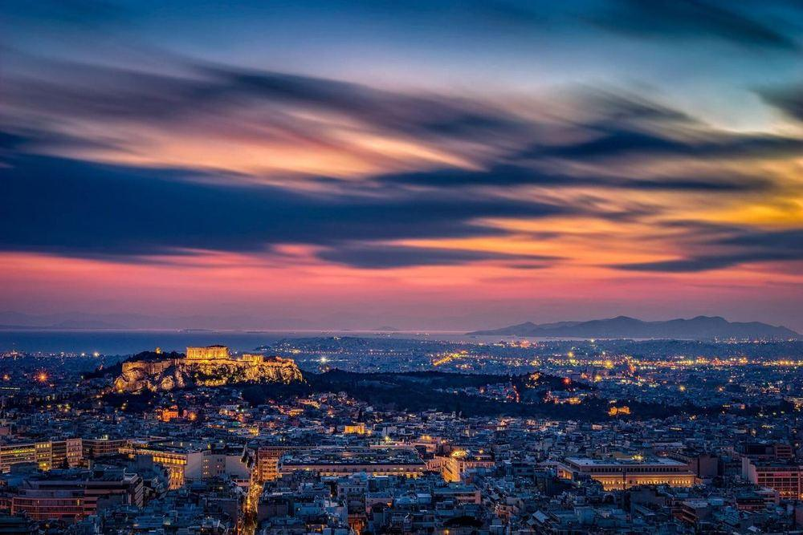
Panos Zoulakis · Wikimedia Commons
Late June into early July 2027 · about two weeks · three stops
Greece, three stops
A city, a real Greek island town, and a week of not moving. Three places over about two weeks, so nobody is packing every other day, with boat days for whoever wants them and a beach or a town for whoever doesn't.
Stop 1The cityAthens3–4 nights
The Acropolis, the rooftops, the food markets, dinner at nine. Arrive off the overnight flight and lose the jet lag somewhere worth losing it.
Stop 2The real GreeceOne island town, still to choose3–5 nights
A working island with an actual town: restaurants, a bakery, a harbor with fishing boats, all on foot. Enough visitors that a big American group is normal, few enough that a coffee still costs what a coffee costs. Good beaches nearby. The town is the reason.
Stop 3The last weekNaxos or Kos, set by the island before it5–6 nights
Somewhere to stop moving. One address that takes the whole group, with great views, a great pool, easy sea access and good food on site. A town at the door is a bonus. Boats and day trips going out from nearby matter more.
The three pairs the boats make easy:
SyrosthenNaxos
MilosthenNaxos
KalymnosthenKos
The three pairstap to hold one · tap again to release
Three pairs, and the map draws each one the way you would really travel it: Athens, the island, then the last week. Syros and Milos both reach Naxos on one direct ferry. Kalymnos is half an hour from Kos by boat. The map cycles through the three; tap one to hold it.
A local’s read · September 2026
Tassos recommended Syros and Naxos
Tassos is Josh’s friend in Athens. He has spent part of every summer of his life on one or two Greek islands, which is fifty years of comparing them against each other, and he likes the same things Josh does: food, then beaches, then architecture. He was sent the shortlist and the size of the group and nothing else.
If it were my family, I would go with Syros and Naxos. With twelve people and kids, that is the combination that makes the most sense, and getting there and between them is easy.
Tassos, Athens
Second choiceKos with Kalymnos: fly into Kos, twenty minutes across by boat. Properly authentic, very good seafood, but less charm than the first pair.
On MilosThe only one he argued against. Amazing beaches, but it has gotten expensive, the best spots are down rough dirt roads, and it connects awkwardly to Naxos.
Booking the boatsOne to two months ahead for twelve people in summer, through Ferryhopper, the site that sells tickets for all the Greek ferry lines in one place.
Cars on NaxosRent them. The best of Naxos is inland and the mountain villages are unreachable without.
When to goJune or September if there is a choice. In late July and August the wind picks up and disrupts the smaller boats, so do not let the dates slip later.
AthensHe offered to point us at the places to eat before we get there.
Tassos wrote in Greek, so the wording here is a translation and the judgment is his.
Stop 1 · the city · 3–4 nights
Athens
Athens is the first stop: the nonstop from Newark lands in the morning, so the first day is a long, slow one (check in, a swim, a walk, an early dinner) and then two or three full days before the islands. The city runs late and warm in summer, so dinner at nine on a rooftop is normal, and some of the best things to do with kids happen after dark.
Athens is the one stop with a real city in it: Plaka, the old town under the Acropolis, and Monastiraki next to it for shopping and ice cream, Psyrri for the evening, the Lycabettus funicular, a little cable railway up the hill, for the sunset photo, and the sea at Vouliagmeni, down the coast, on a hot afternoon. After-dark options are the point here; the beaches are a break from the heat.
Acropolis to Lycabettus is about 2 km; the Stavros Niarchos park is on the coast, about 4 km south. The land runs on in every direction; only the shore is drawn. The historic center is a 20-minute walk end to end; the Stavros Niarchos park is a short taxi or tram ride south. Outlines: OpenStreetMap contributors.
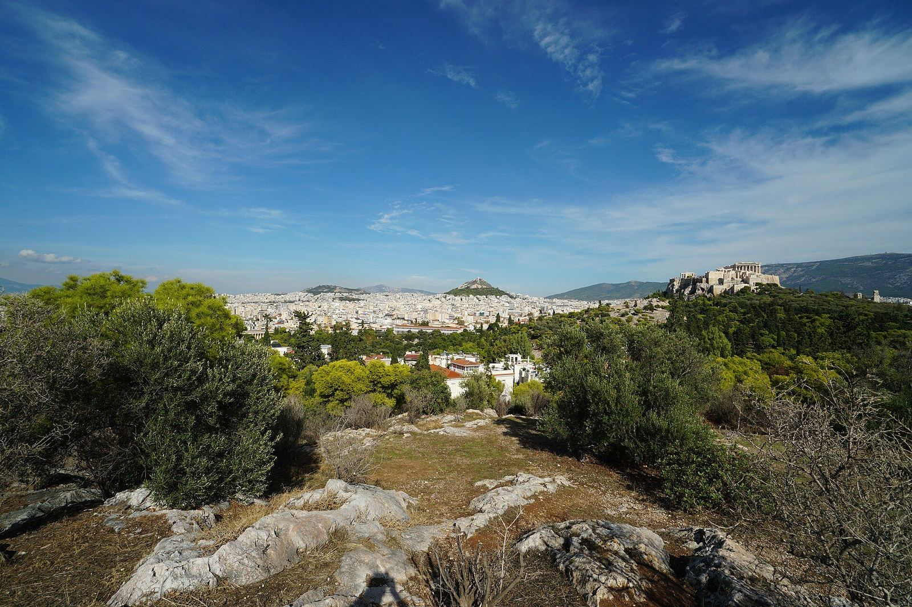
George E. Koronaios · Wikimedia CommonsThe city from Philopappos hill: Plaka and Monastiraki at the foot of the Acropolis, Lycabettus behind.
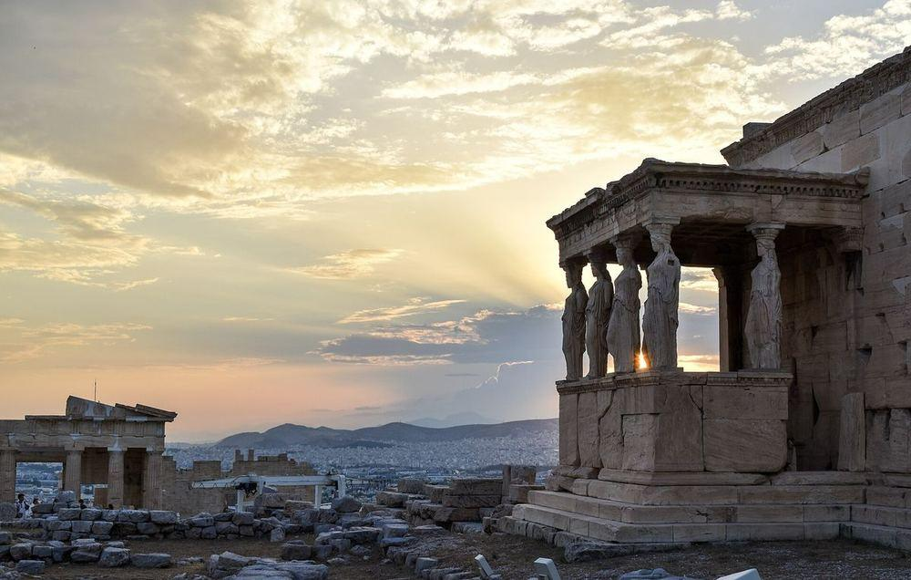
Julian Lupyan · Wikimedia Commons
The Acropolis and the Parthenon
The hilltop temple complex above the city, open from 8 AM in summer. The Parthenon is the headline, but the Erechtheion, where six marble women stand in place of the columns, and the view over the city are the parts people remember. Kids stay hooked when someone tells them the stories behind the stones, so a guide or a mythology framing pays off.
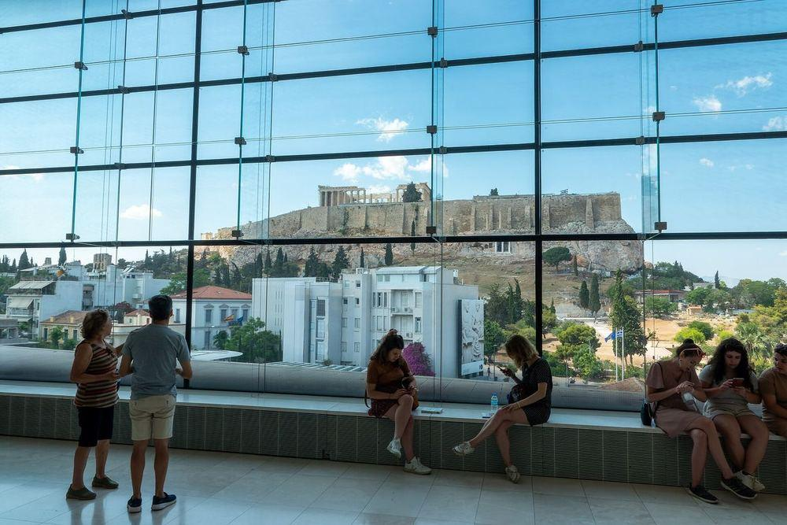
Bob Jenkin · Wikimedia Commons
Acropolis Museum
Cool, bright and built over excavated ruins you can see through the glass floors. The top floor holds the Parthenon sculptures in a glass room facing the temple itself. The natural midday escape after the hill, and it has a family backpack, a riddle tour and a LEGO Acropolis for the kids.
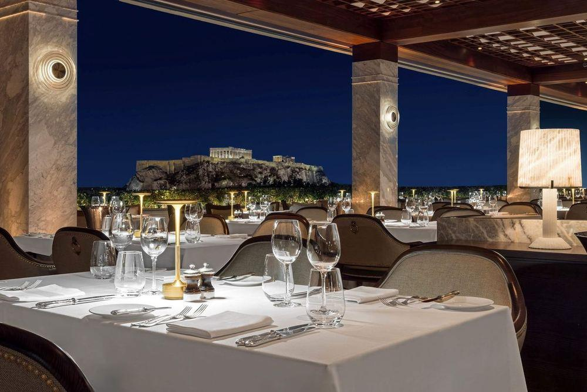
Hotel Grande Bretagne / Marriott
Rooftop dinner with the Parthenon lit up
Two Parthenon-facing terraces at different tiers: the GB Roof Garden on top of the Hotel Grande Bretagne on Syntagma Square (Michelin Guide recommended), and Strofi near the Acropolis Museum, open since 1975 and known for clay-baked moussaka and lamb in grape leaves. At either, the view is the point.
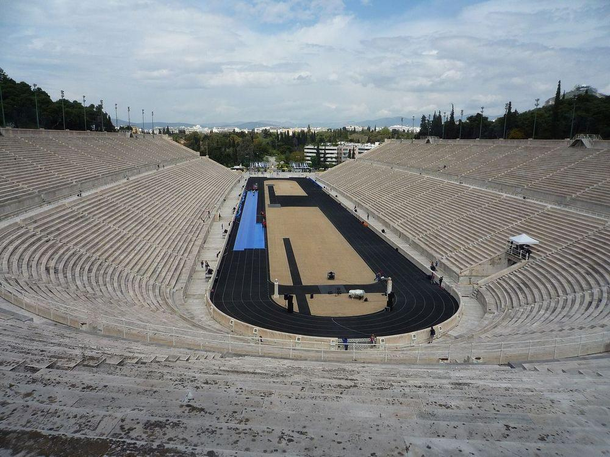
Sjaak Kempe from Groningen, The Netherlands · Wikimedia Commons
Panathenaic Stadium
An all-marble Olympic stadium, and the one sight where the kids get to do something: a ticket lets you walk in and run laps on the actual track where the first modern Olympics were held, with an audio guide included.
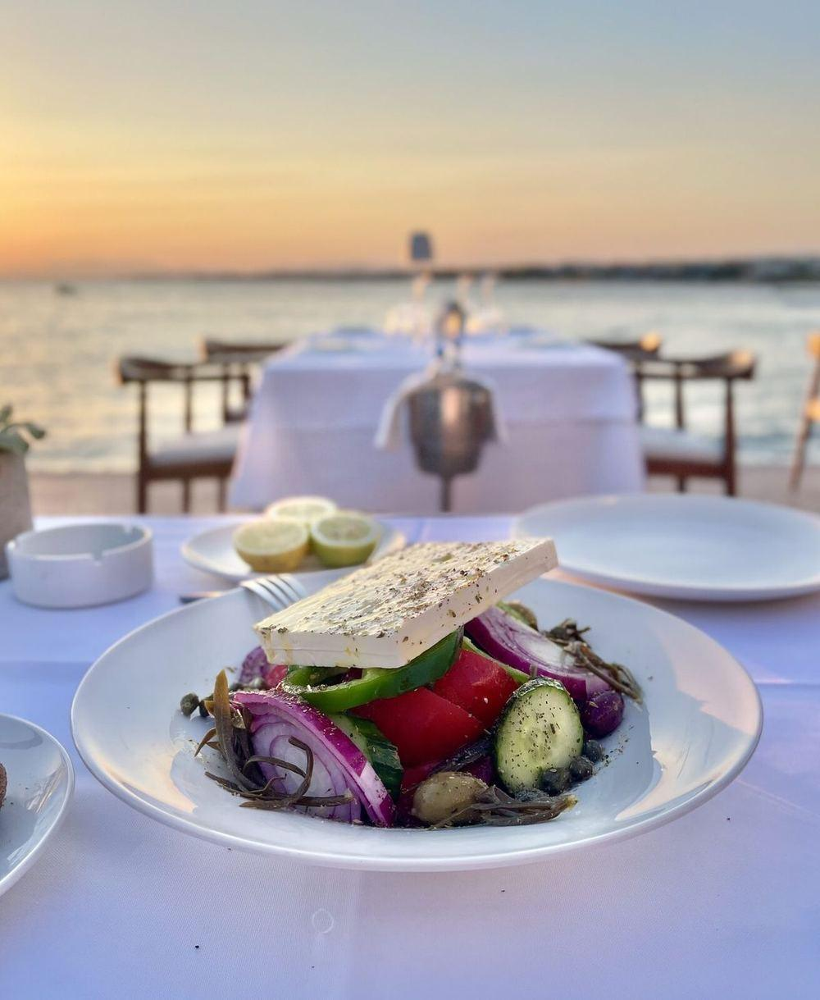
Josh · July 2021
Papaioannou Vouliagmeni
The seaside branch of the Papaioannou family's seafood house, about 25 km south of the Acropolis on the coast road. Expensive seafood on a wooden deck built out over the water, and the point is dinner with the sun going down on open sea. The horiatiki, the standard Greek village salad of tomato, cucumber, onion, olives and a slab of feta, is pictured. Josh has eaten here and vouches for it.
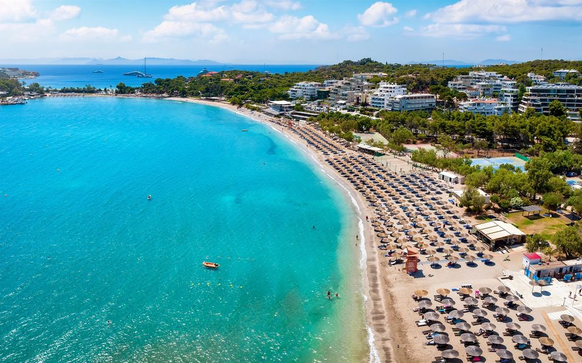
Shutterstock · ekathimerini.com
An afternoon in the sea south of the city
The coast below Athens is about forty minutes out by taxi, and swimming there is what people do with a hot afternoon. Organized beaches with sunbeds, shade and somewhere to eat run about ten euros a head; beach clubs on the same stretch charge several times that for the same water. An idea for the hottest day.
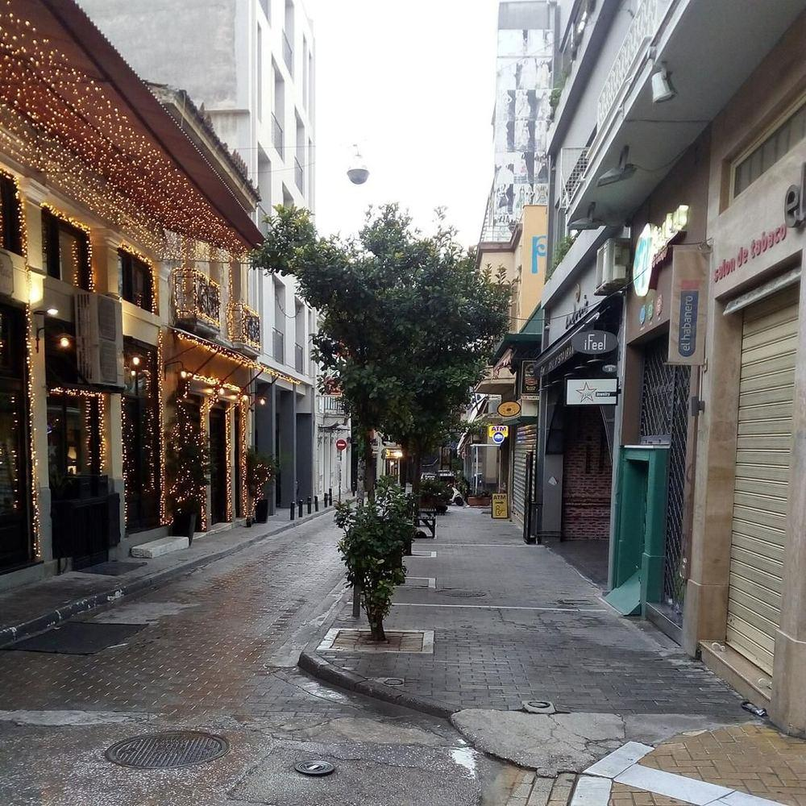
Wikimedia Commons
Psyrri, the taverna quarter
The neighborhood behind Monastiraki where the tavernas and bars spill into the lanes at night, with live music behind half the doors. The natural place to end an evening on foot.
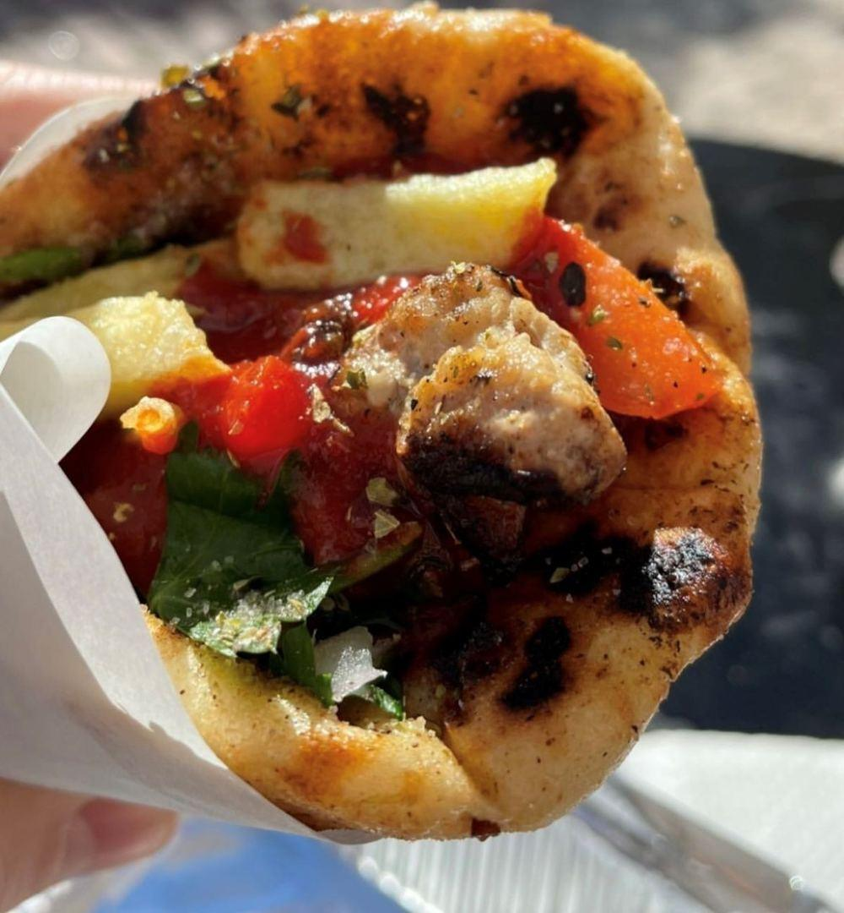
Shabby Flanders · devourtours.com
Souvlaki on Mitropoleos Street
Souvlaki (skewered grilled meat) is the classic Athens street food, and Mitropoleos Street by Monastiraki is its most famous strip: O Thanasis has been there since 1965 and is a proven hit with kids and picky eaters. Kostas, a tiny counter serving the same pork souvlaki since 1950, closes when the meat runs out.
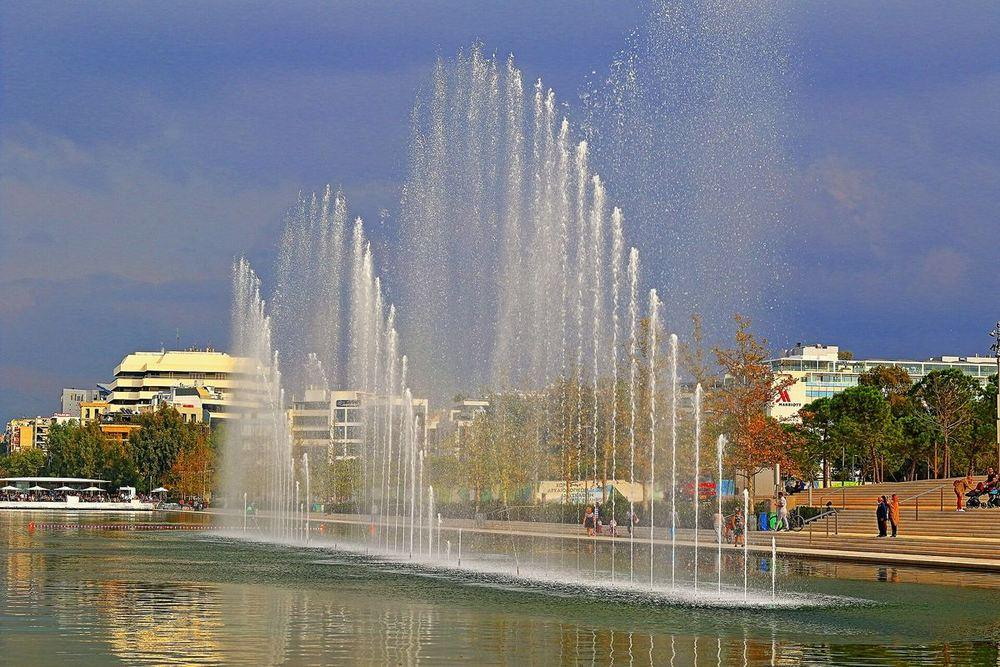
Strange Traveler · Wikimedia Commons
Stavros Niarchos Foundation Cultural Center
A huge free park by the sea in Kallithea, designed by Renzo Piano: choreographed fountains along the canal every half hour, a big playground with water jets, and free bikes along the promenade. Best in the late afternoon and at dusk, when the lights come on and the fountains run against a deep blue sky.
Panos Zoulakis · Wikimedia Commons
Lycabettus at sunset
A short funicular (a cable railway) climbs the hill to the summit chapel and the best 360-degree view in Athens, and it runs until well after midnight. Go up for the last light, watch the Acropolis switch on, and come down for dinner.
With the kids
Laps on the marble track of the old Olympic stadium, the Acropolis with the myths told properly, and the guards in ceremonial dress changing in front of Parliament on the hour (the big version is Sunday at eleven). The Stavros Niarchos park on the coast has a water-jet playground and free bikes. The Lycabettus cable car runs up the hill after dark.
Where to sleepTwo neighborhoods do the job. Plaka, under the Acropolis, is walkable to almost everything, and the prettiest and priciest of the two. Koukaki is the quieter residential side ten minutes further out, cheaper, with the metro and the Acropolis Museum at the end of the street. In either one the shapes available are the same: a block of family rooms in a hotel with a pool, two or three apartments in the same building, or one large house that sleeps everyone under one roof.
Stop 2 · the real Greece · 3–5 nights · one of three
The island town
The middle week is the one that makes this a Greek trip. Three islands can carry it. Tassos has a preference, further up this page, and the rest of the research does not settle it. What separates them is the town, how easy the beaches are, whether twelve of us fit at one address, and which third stop they connect to, because each island is locked to a different one. And on all three there is souvlaki, grilled chicken and chips for anyone who has had enough octopus.
Why not Mykonos, Santorini, Paros or IosThey are the islands everyone has heard of, and that is the problem: in summer they run on cruise crowds and Instagram, with menus and hotel rates priced for a different trip. Mykonos might as well be Miami Beach. Milos is the one island below that is heading the same way, and it is on the list anyway because the landscape has no substitute; the cost shows up in the price, which is the highest of the three. The other two have the same light and the same sea, real towns, better food, and prices that still make sense.
How these differ
Three islands, three different things
All three are places people live in year-round. Past that they are unalike in almost every way, and the three cards below are the shortest version of the difference.
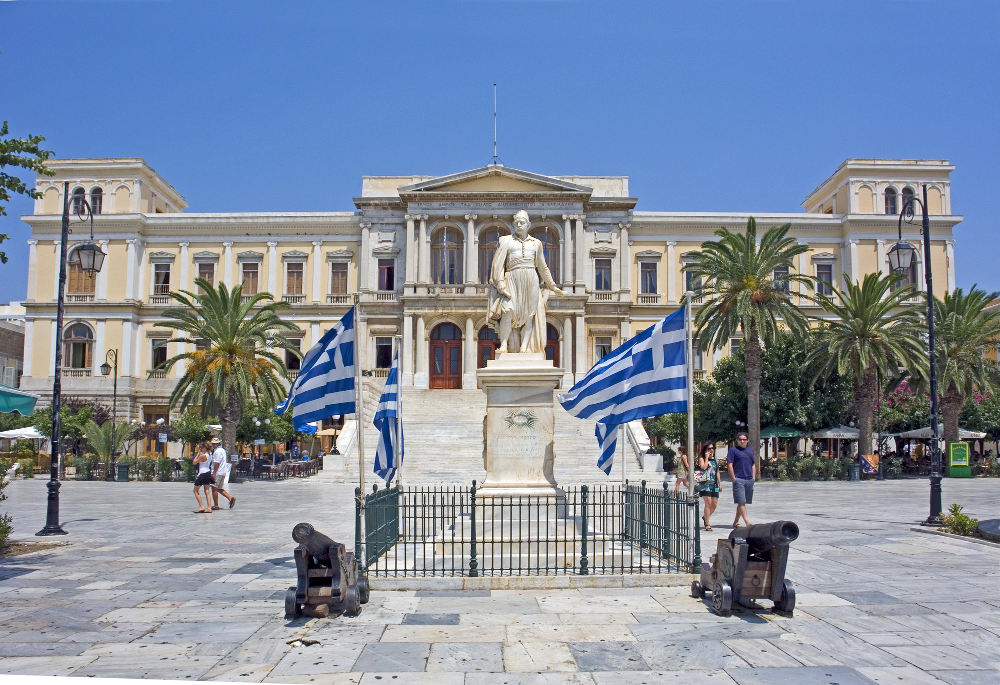
Hans Peter Schaefer · Wikimedia Commons
Syros
The city
A marble square the width of a city block, an opera house, and a high street of pharmacies and hardware shops. A cafe culture that runs all year, and its own protected cheese. The beaches are small and on the far side of the island.
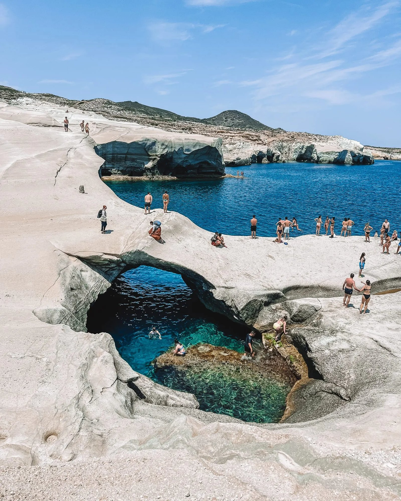
Travel photography
Milos
The landscape
An old volcano that blew its side out, so the rock runs white, pink and gray and there are about seventy beaches. Nothing else in Greece looks like it. It is also the most expensive week, and there is no town to walk out into at night.
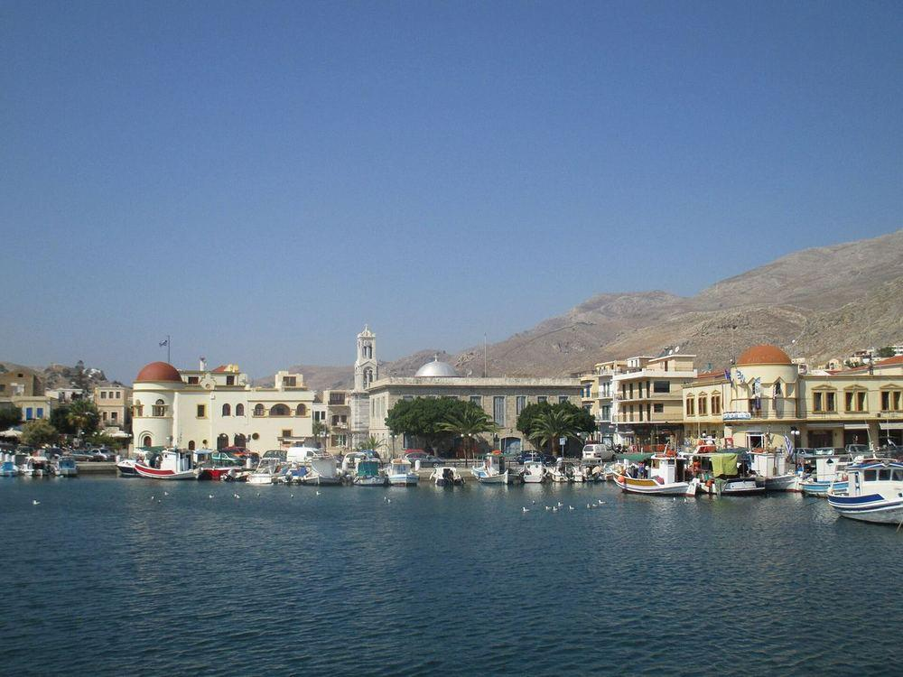
Tomisti · Wikimedia Commons
Kalymnos
The port town
Bare limestone mountains, and a harbor with the largest small-boat fishing fleet in the eastern Mediterranean tied up in it. The best fish and the cheapest week. Plainer than the other two, and the beach coast and the town are half an hour apart.
Athens in black, the three choices for the middle week in blue, the two third stops in orange. A line means one boat and no changing: Syros and Milos each reach Naxos on a single ferry, and Kalymnos reaches Kos in half an hour. The pairs with no line between them (Kalymnos to Naxos, and Syros or Milos to Kos) have to go back to Athens and change there, which is why the three pairings on this page are the three that have lines. Coastlines: OpenStreetMap contributors.
Stop 2 · option 1 of 3
Syros
The grandest town of the lot, and a working city
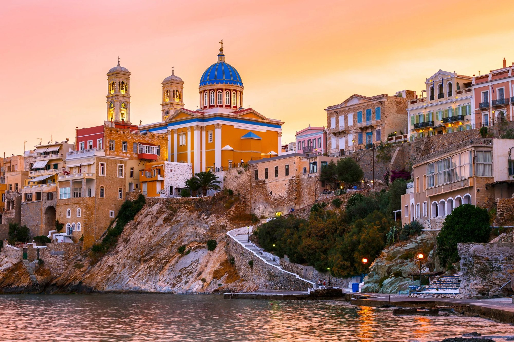
Shutterstock
Stop 2 · option 1 of 3
Syros
The grandest town of the lot, and a working city
Town at 9pm
Miaouli Square is a marble plaza the width of a city block, with the town hall along one side, cafe tables under the trees and a bandstand. It fills up in the evening and stays busy late. Above it, Ano Syros is a medieval Catholic village of stepped lanes too narrow for cars.
Cars
Not needed in town, useful for the beaches. Ermoupoli is walkable end to end; Galissas, Kini and Vari are village beaches on the west and south coasts, all served by bus.
Beaches
The weak spot. They are small, they are on the other side of the island, and none of them is at the door. This is a town stop first and a swimming stop second.
Lodging
Stay in Ermoupoli itself, ideally the Vaporia district just north of the main square, where the old shipowners' houses are. Syros is the only one of the three with a real market in whole houses big enough for a group, alongside the usual apartments. It books out early.
Getting on
Fly from Athens, 35 minutes on Sky Express, daily except Saturdays. On to Naxos it is a direct boat, about an hour and a quarter, most days in summer.
Who goes
More Greeks than most islands, because it is the capital of the Cyclades, the ring of islands southeast of Athens, and a working port with a year-round life of its own. It is firmly on the tourist map too, and in July you will know it. What is different is that Greeks are here as well, all year round.
The trade-off. You get the best evenings of the three and somewhere to walk to after dinner. You give up the beach at the door: they are small and on the far side of the island. And if the picture in your head is a whitewashed village above a cove, this is not that.
What Tassos says
Where to stayErmoupoli, the town itself. He did not name a hotel; his point was that Ermoupoli is a working town, so being in it is the whole idea. Three or four nights.
Where to goThe old mansions and the harbor, and the tavernas locals eat in. Galissas and Kini for swimming, both calm and easy. Kini again in the evening: fish places right on the water for sunset.
The capital of the Cyclades, and the only one of these islands that is a city. Nineteenth-century shipping money built Ermoupoli a marble square, a town hall by Ernst Ziller, the German-born architect who designed much of official nineteenth-century Athens, and a small opera house copied from La Scala, the Milan theater that was then the most famous opera house in Europe. Two hilltop churches, one Catholic and one Orthodox, face each other over the rooftops. It has never been a resort.
About 17 km end to end. Ermoupoli and Ano Syros on the east side; the beach villages of Galissas, Kini and Vari around the west and south. Outlines: OpenStreetMap contributors.
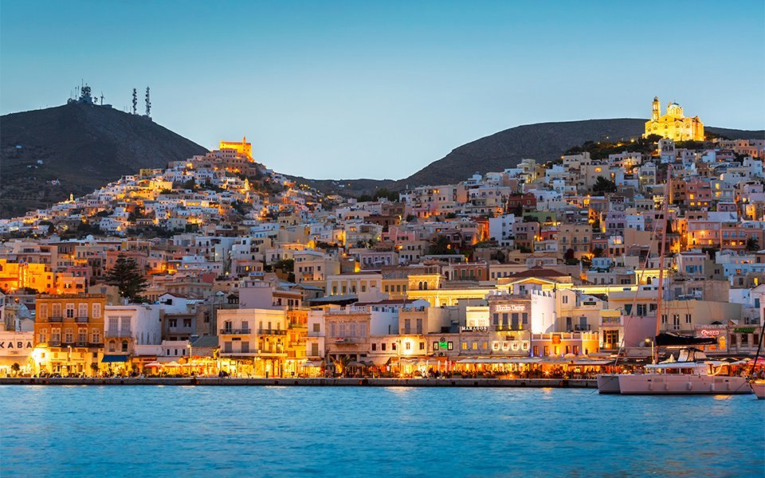
Travel photographyErmoupoli from the water after dark. The lit strip is the working harbor; each of the two hills behind it carries a church, one Catholic and one Orthodox.
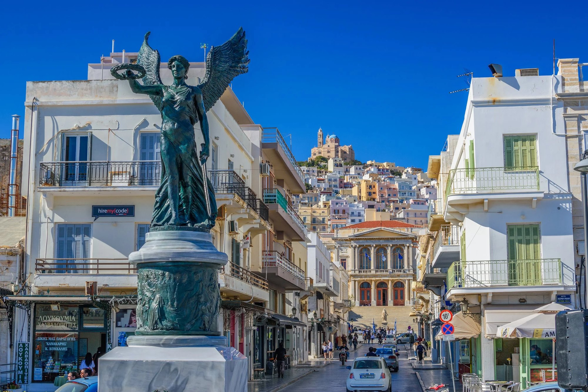
Shutterstock
What the shipping money built
Ermoupoli was the richest port in Greece before Piraeus took the trade, and everything you walk on here is what that money left behind: marble underfoot, pediments and pilasters on the facades, a whole nineteenth-century city center. No other island on this list has one.
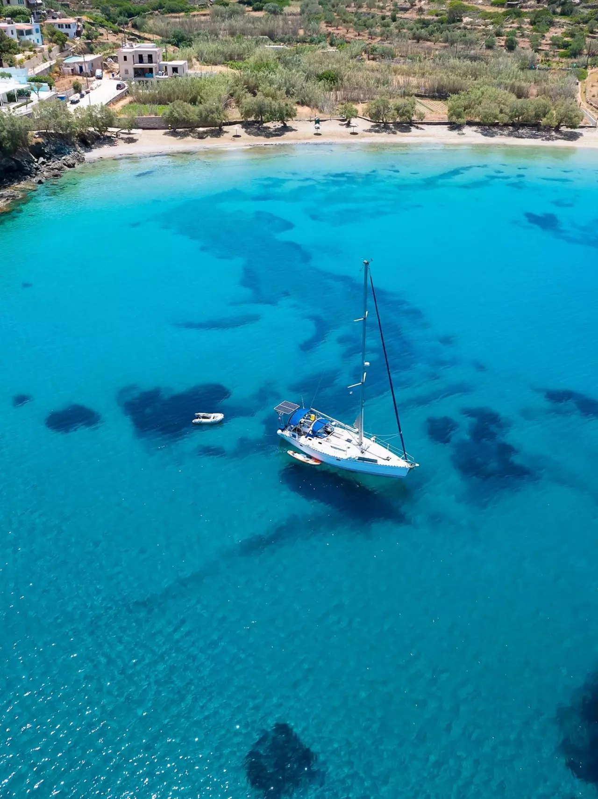
Travel photography
Day trips out of Ermoupoli
Syros sits in the middle of the Cyclades, so the neighbors are close: Tinos, the next island north, is about fifteen minutes away on the fast ferry. Boat trips run from Ermoupoli and the coves on the west side are reachable by road or by water.
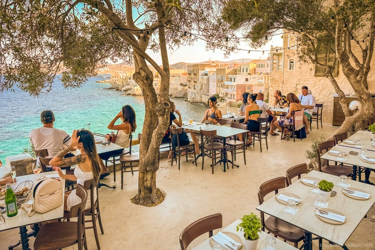
Travel photography
Kini, and fish on the water
Tassos’ specific recommendation for Syros: swim at Galissas or Kini, then come back to Kini in the evening, because the fish places sit right on the water and face the sunset. Tables are a few feet from the sea. This is the evening he was describing.
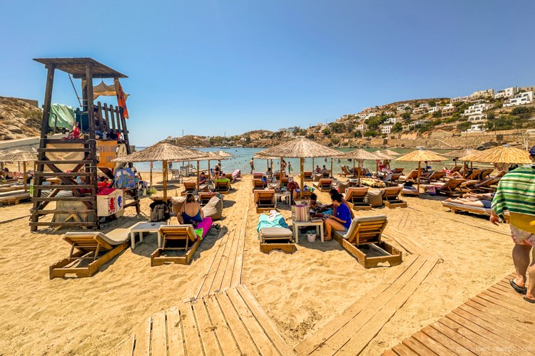
Travel photography
Small, but easy once you get there
The honest answer to “but are the beaches any good with kids.” Syros’ village beaches are small and organized, not wild: sunbeds, umbrellas, a lifeguard, a taverna behind, shallow entry. Galissas, Kini and Vari are all a short bus ride from Ermoupoli.
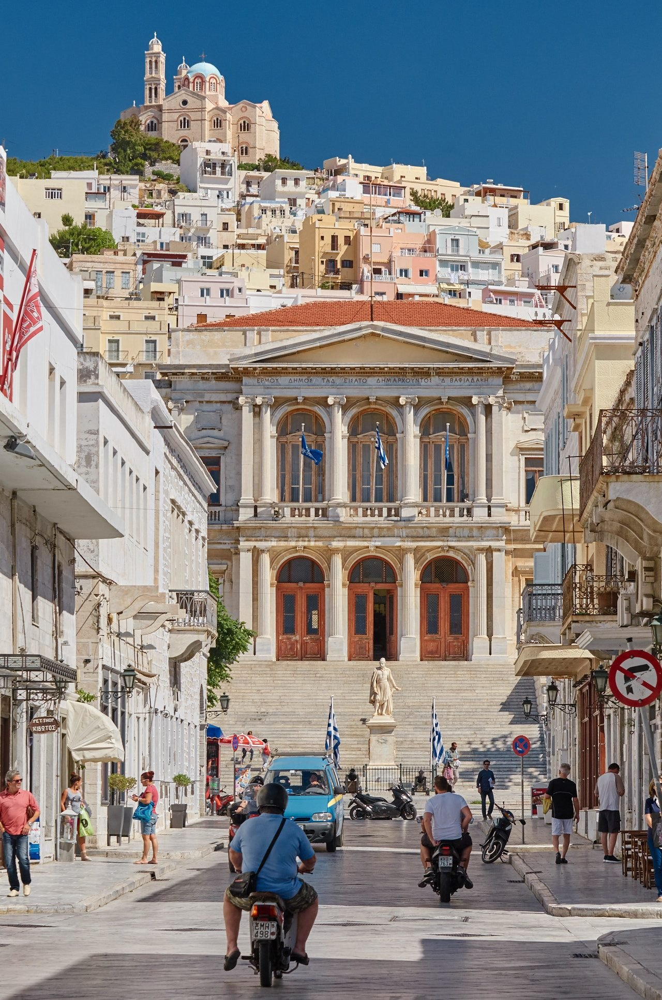
Lucian Niculescu
An ordinary afternoon
Looking up the square to the town hall, with the statue of Admiral Miaoulis on the steps and the flags out. Behind it the hill is solid houses all the way up, with one of the two hilltop churches on the skyline. At street level: scooters, a pet shop, people going home with the shopping. This is the difference Tassos was pointing at, a town that would carry on much the same if the ferries stopped.
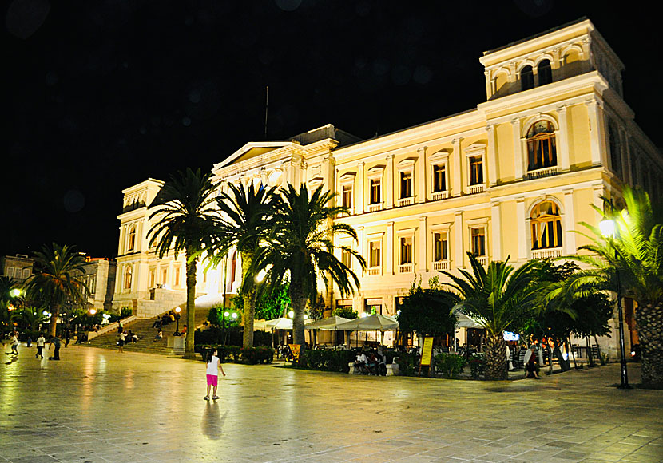
kalispera.se
Miaouli Square after dark
The town hall floodlit, the palms lit under it, the cafe tables out along one side with people at them, and a child crossing the empty marble in the foreground. From about six the square fills and stays busy well into the night, families out and children running about. Every visitor account of Syros comes back to this square.
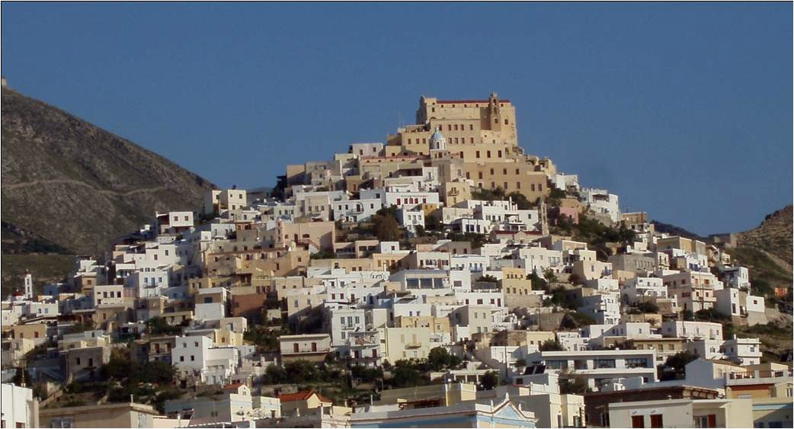
Elpri · Wikimedia Commons
Ano Syros
The medieval Catholic village stacked up the hill above the port, with the church of St George on the summit. The lanes between the houses are stepped and too narrow for a car, and from the top the whole town and the next islands are laid out below you. Fifteen minutes up by bus, or a long climb.
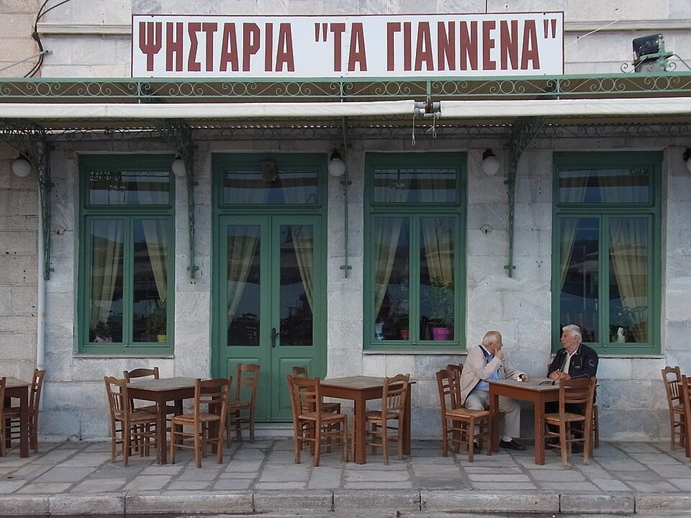
Wikimedia Commons
Eating on the quay
The waterfront is lined with tavernas facing the ferries. Syros has its own cheese, San Michali, sharp and hard and protected by name, plus the island’s loukoumi, the soft jellied sweet sold everywhere in boxes, and a cafe culture that runs all year.
With the kids
What works here is that the town is usable. Miaouli Square fills up after dinner and everyone is out in it, the high street is a real one with shops and somewhere to get ice cream, and a bus reaches a beach with sunbeds and shallow water in twenty minutes. For a ten-year-old and a fifteen-year-old both, this is the island stop where they can leave the house on foot and find something. Kos and Naxos both give them more to do. The catch is that no beach is at the door, so a swim is an outing you plan.
A base for the whole group
This is town stock, which makes it different from the other two. What is available in Ermoupoli is nineteenth-century houses divided into apartments, a smaller number of whole houses in the Vaporia district big enough for a family or two, and a couple of conventional hotels down at the port that could take a block of rooms. Whether any one address holds all twelve depends on what is free that week. Syros also books earlier than the other two, because Athenians come over for weekends.
Stop 2 · option 2 of 3
Milos
The strangest landscape in Greece, and the most expensive week on the list
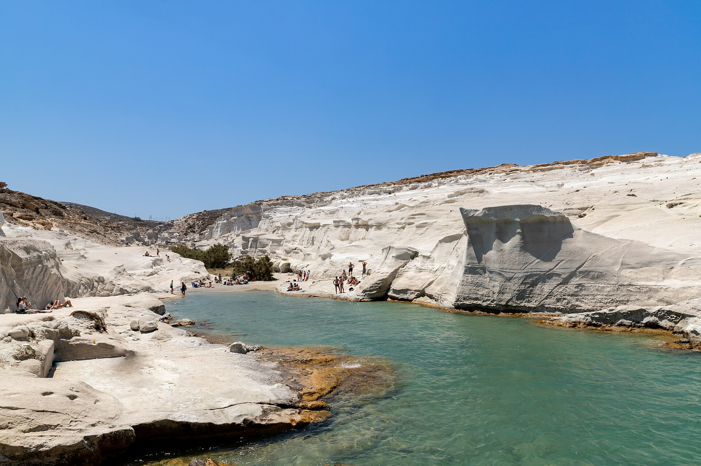
dronepicr · Wikimedia Commons
Stop 2 · option 2 of 3
Milos
The strangest landscape in Greece, and the most expensive week on the list
Town at 9pm
You get one or the other. Plaka, the hill town (Milos has its own Plaka, unrelated to the Athens one), is the best-looking place on the island, but it sits a kilometer above the sea and almost nothing up there has a pool. Pollonia, on the north coast, is a flat fishing village with a row of restaurants along the water, and it is where a group this size would sleep.
Cars
Recommended. Seven bus routes run out from Adamas and back, including one straight to Sarakiniko, but the popular ones run a few times a day and the quiet ones no more than four.
Beaches
About seventy of them, and they are the reason to come. Sarakiniko is white volcanic rock worn smooth; Firiplaka, Tsigrado, Provatas and Paliochori have sand. The boat day to Kleftiko, the sea caves on the south coast, is the trip everybody names.
Lodging
Stay in Pollonia, the village on the north coast. It is the one address on the island where a group this size can be in a village and on the water at once, and the shapes available are small hotels, apartments and studios, a good share of them with a pool. Plaka, the hill town, has almost nothing to rent and no pool anywhere in it. Milos is the most expensive of the three by a wide margin.
Getting on
Fly from Athens on Olympic Air or Sky Express, a short hop, several a day in summer. On to Naxos it is a direct boat, four sailings a week.
Who goes
It got popular fast and the prices followed. Americans and Instagram have both found it. Not Mykonos or Paros yet, but heading that way, and you will notice.
The trade-off. You get scenery nothing else on this list can match, and about seventy beaches to use it on. You pay for it twice: it is the most expensive of the three by a wide margin, and you cannot have both the hill town and the water. With twelve people you sleep at sea level in Pollonia and drive up to Plaka for an evening.
What Tassos says
His warningMilos is the one island he argued against for this trip. The beaches are amazing, but it has gotten expensive, the best spots are down rough dirt roads, and it connects awkwardly to Naxos.
The Venus de Milo was dug out of a field here in 1820 and is now in the Louvre. Milos has been mined and quarried for three thousand years, and it looks like nowhere else in the Aegean because of it. Adamas is the port and the bus hub. Plaka is the hilltop capital, with a castle above it left by the Venetians, who ran these islands for four hundred years before the Ottomans took them. Pollonia is a flat fishing village at the northeast tip, and it is the one address on the island where twelve people can be on the water and in a village at the same time.
Adamas is the port and the bus hub. Pollonia is the base that works for twelve. Plaka is the hill town you go up to in the evening. Outlines: OpenStreetMap contributors.
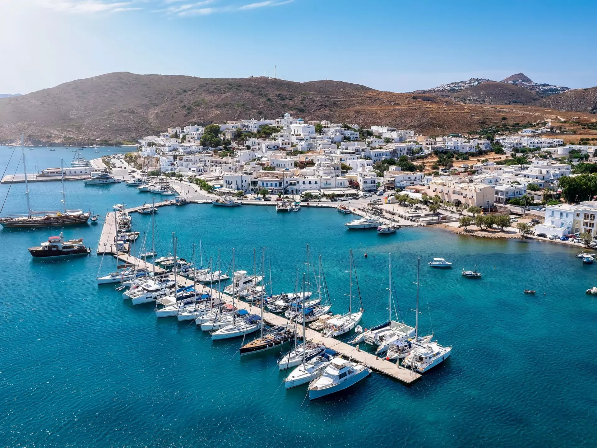
Travel photographyAdamas inside the flooded crater. The bay is the blown-out wall of the volcano, which is why Milos is a horseshoe.
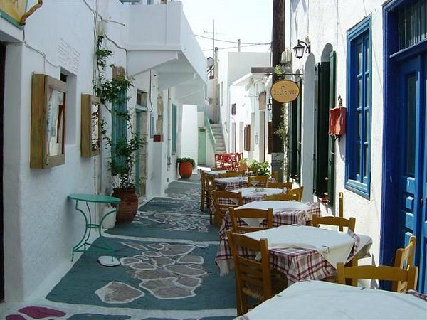
Travel photography
Eating on Milos
Milos eats well without making a performance of it: fish off the day boats at Pollonia and Klima, pitarakia (small cheese pies) everywhere, and the island’s own sfela cheese. Adamas has the range, Pollonia has the setting, and in Plaka you eat looking down the whole length of the bay. It is not the food island of the three, though. Syros and Kalymnos both beat it there.
Travel photography
Sarakiniko, with people in it
The same white moonscape as the picture at the top, from ground level and with the crowd left in. The rock shelves run straight into deep clear water and the arch is the jumping-off point. It is the single most photographed place on Milos and in late June it is busy by ten in the morning.
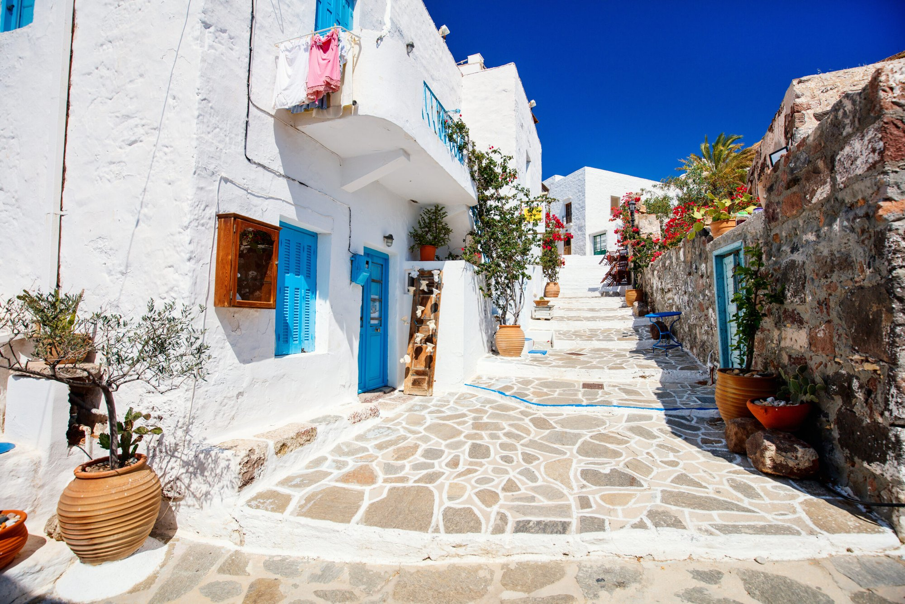
Travel photography
Plaka on foot
Plaka from inside, not from across the valley: stone lanes too narrow for a car, painted doors, pots on every step. Plaka is where the evening happens on Milos. It is also forty minutes from most of the beaches, which is the island’s central compromise.
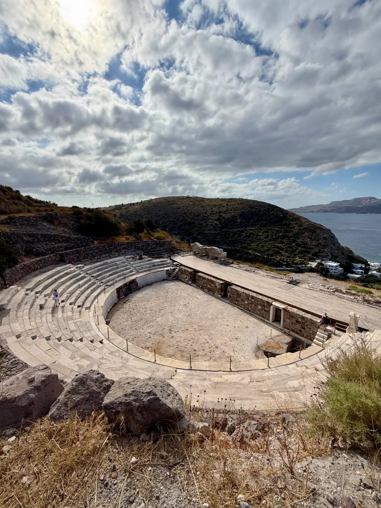
Travel photography
The ancient theater
Cut into the hill below Tripiti, looking out over the gulf, five minutes from the field where the Venus was found. Marble seating, a sea view, usually almost empty, and free to walk into.
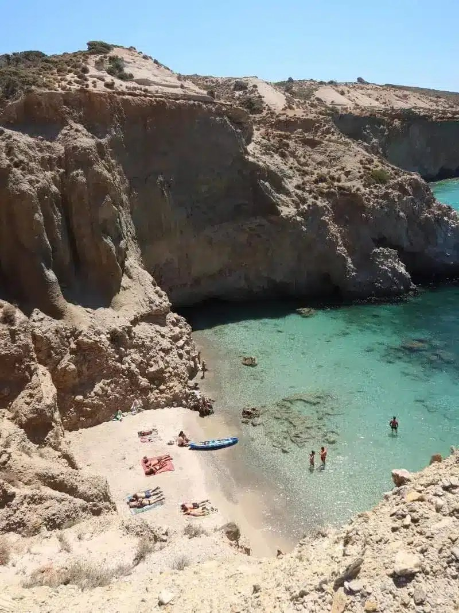
Travel photography
Tsigrado, and the catch
This is what Tassos meant about Milos. The best beaches are down unpaved roads, and the last part of Tsigrado is a rope and a wooden ladder through a gap in the rock. Fine at fifteen. An argument at ten. Not something you do twice in one day.
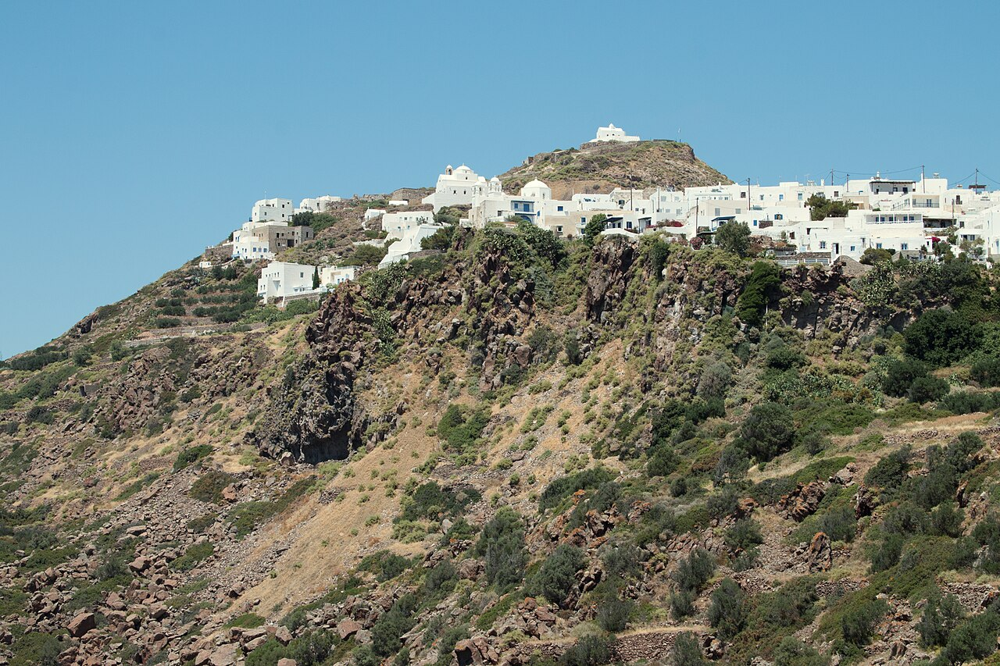
Zde · Wikimedia Commons
Plaka, on its rock
The capital sits about a kilometer above the sea with a Venetian castle on the summit and the ancient theater and catacombs on the slope below at Trypiti. It is the prettiest place on the island and it is not where you stay: there is very little to rent up here, no pool anywhere in it, and the nearest water is most of a mile downhill. Go up for the evening instead.
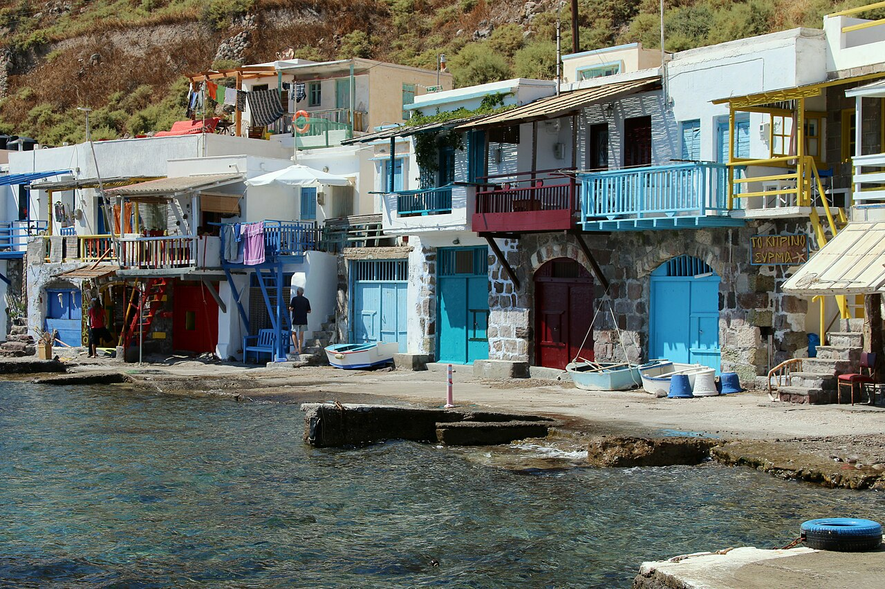
Zde · Wikimedia Commons
Boat garages with a house on top
Syrmata, they are called. The ground floor was a garage for the fishing boat, winched up out of the water, and the family lived on the floor above. Klima is the famous row, painted in every color, with the sea a step from the door. Several are rentable now. They are small, and after Sarakiniko they are the most photographed thing on the island.
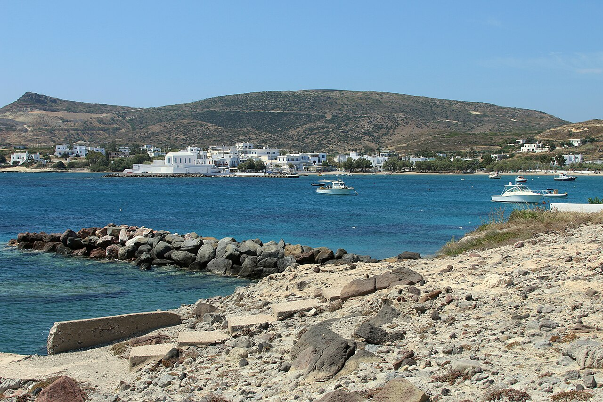
Zde · Wikimedia Commons
Pollonia, the base that works
Flat, on the water, at the northeast tip, with the restaurants along the front and the boats pulled up beside them. Twenty minutes from Adamas and the buses, forty from Plaka.
The boat day to the Kleftiko caves
The boat day to Kleftiko is the reason to come. Kleftiko is a stretch of the south coast, reachable only from the sea, where the rock has been cut into white caves and arches you can swim through. A day boat goes out, stops to swim several times, and it is the one trip everybody who goes to Milos talks about afterwards. Sarakiniko is the moonscape and there is a bus straight to it. Firiplaka, Tsigrado, Provatas and Paliochori are the beaches with sand.
With the kids
The white rock at Sarakiniko is the draw: smooth shelves and ledges to scramble over, with water deep enough to swim straight off them. The jumping is for the fifteen-year-olds; there is easier entry at the far end. The mining museum explains why the island looks the way it does. The day boat to the Kleftiko sea caves on the south coast is the one everybody remembers. What Milos does not have is a town to walk out into at night: Pollonia is one row of restaurants and that is the evening.
A base for the whole group
Almost everything that suits a group this size is in Pollonia: small hotels, apartments and studios, a good share of them with a pool, most within a few minutes of the village center and the beach. Three rentals of four people each is the shape that works, and it prices out at roughly two and a half times the same shape on Kalymnos. Milos has become fashionable and the pricing shows it. Most of what was on offer for a late-June week was already gone a year ahead, so decide early.
Stop 2 · option 3 of 3
Kalymnos
A working port town, and the easiest place to get out on a boat yourselves
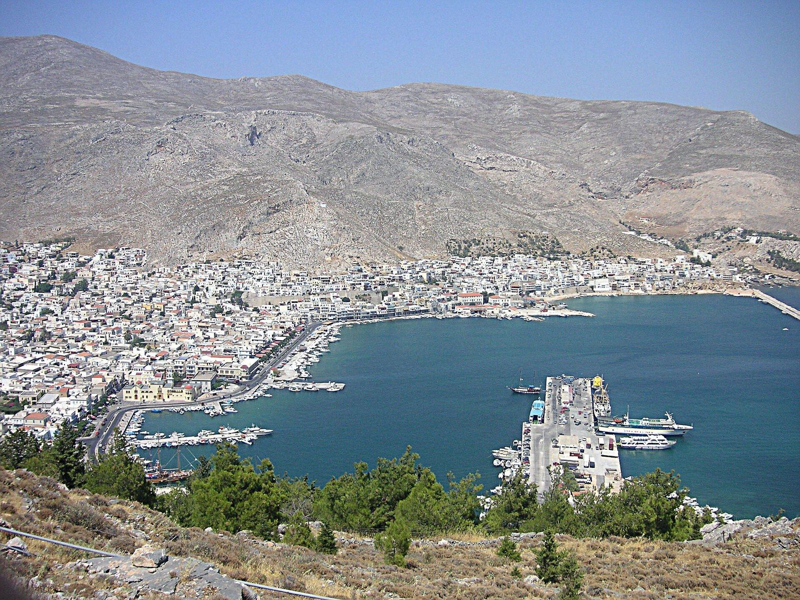
Wikimedia Commons
Stop 2 · option 3 of 3
Kalymnos
A working port town, and the easiest place to get out on a boat yourselves
Town at 9pm
Pothia is a working Greek town: neoclassical and Italian-era, not whitewashed. Italy governed these islands from 1912 to 1943 and left the public buildings behind. More Greeks than visitors on the harbor front, and noisy with scooters, which every visitor account mentions. Telendos, the car-free islet across the strait, is the evening instead: one lane of tavernas and a two-euro boat every half hour until late.
Cars
Useful, not essential, if you base on the Myrties and Massouri strip. Pothia to Massouri is twenty to thirty minutes on narrow roads and the municipal bus runs it several times a day.
Beaches
Massouri and Myrties face Telendos across a narrow strait and the sunset behind it is the island's picture. Boats small enough to drive with no license at all, thirty horsepower, up to seven people, are the thing neither of the other two islands offers.
Lodging
The widest choice of the three, and the cheapest by a distance. Stay either in Pothia, the port town, or out at Massouri and Myrties on the west coast facing Telendos. Apartments with kitchens are the common shape here, and it is realistic to put the whole group at one address.
Getting on
Fly from Athens to Kos, several a day, then the boat across to Pothia, thirty to forty-five minutes, about eighteen a week. The same boat is how you get to the third stop.
Who goes
Climbers, from all over, spring through autumn, along with divers, walkers and people off boats. It is an island that works for a living and takes visitors on the side, which is most of the appeal. Almost no cruise traffic: under a thousand passengers landed there in the whole of 2025.
The trade-off. You get the cheapest week by a distance, the best fish on the page, and a boat you can drive yourselves. You give up prettiness: the towns are plainer than Syros or Naxos, and nowhere here has the tight web of old lanes you wander into after dinner. Telendos, the little island across the water, comes closest, and getting there is a ten-minute boat ride.
What Tassos says
His second choiceKos with Kalymnos was the pair he named after Syros and Naxos: fly into Kos, twenty minutes across by boat. He rates Kalymnos as properly authentic, with very good fish.
Bare limestone mountains dropping straight into the sea, a big amphitheater of a harbor town, and the sunset behind Telendos from the Massouri side, which is one of the best views on any island on this page. Nothing here is the white-cube look people picture when they think of a Greek island. It is a different-looking place. Known for sponge diving and world-class rock climbing; less known for having the largest small-boat fishing fleet in the eastern Mediterranean, which is why food-serious travelers go. Pothia, the main port, is a real working harbor with some grit at the quay.
About 21 km end to end. Pothia in the south; the beach coast faces Telendos on the west. Outlines: OpenStreetMap contributors.
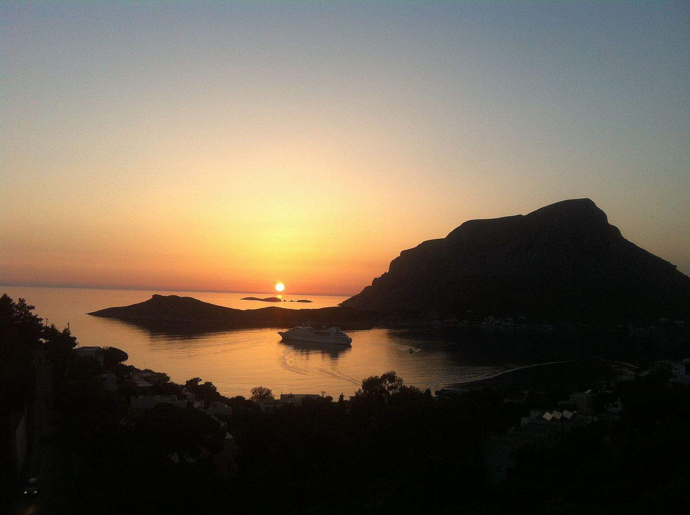
ΘΕΜΙΣ · Wikimedia CommonsTelendos at sunset from the Massouri side, the beach-and-hotel coast.
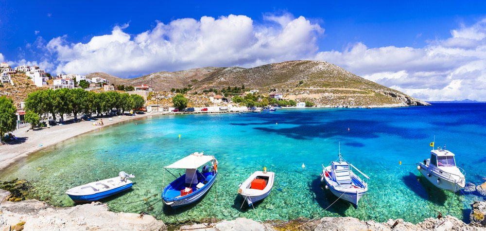
Travel photography
Vlychadia, the swimming end
Kalymnos is known for climbing and sponges, which undersells the water. Vlychadia is a sheltered bay on the south coast with sand, shallow clear water and boats moored a few meters out. It is the answer to whether a week here means climbing or swimming: both, and the swimming is easy.
Tomisti · Wikimedia Commons
Pothia harbor
A fishmonger and a fish market on the quay, sponge boats tied up, and neoclassical houses in ochre and blue. One fish tavern here sends its own wooden boat out every morning and cooks whatever comes back.
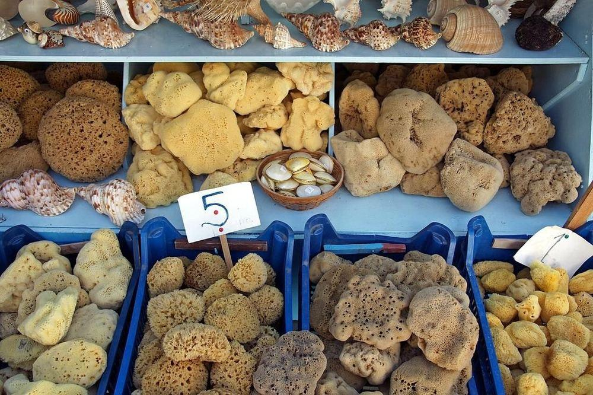
kallerna · Wikimedia Commons
Sponge-diving heritage
The tradition that made the island rich in the 1800s. It also produced a preservation-food culture of sun-dried octopus and salted fish that is still in daily use, not heritage display.
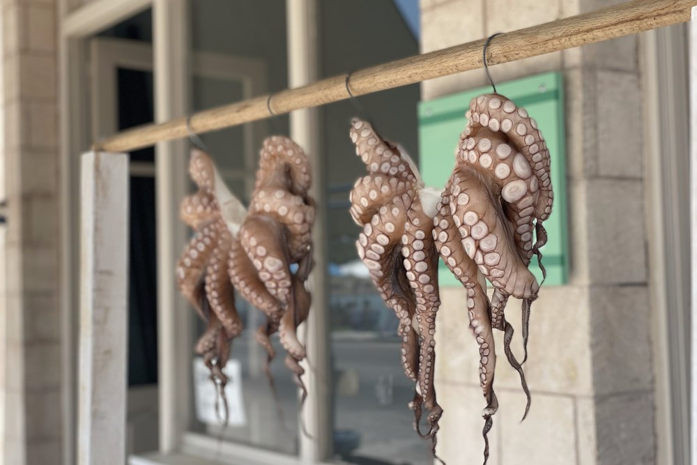
Lourakis · Wikimedia Commons
Octopus on the line
Octopus hung out to dry in the morning sun, then grilled that evening. It is the signature Kalymnian dish, eaten as octopus meatballs and in a stew, and the boats that land it are the largest small-boat fishing fleet in the eastern Mediterranean. (Photograph taken on Crete, where the same thing is done.)
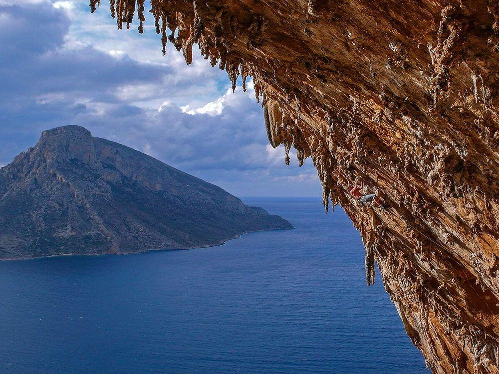
Ralf Dujmovits · Alpine Club of Canada
Climbing cliffs above Massouri
There is a climber in this picture, in red, halfway out along the underside of the overhang, which gives you the scale of it. These walls draw climbers from every continent from spring through autumn, and you can watch them from the beach below.
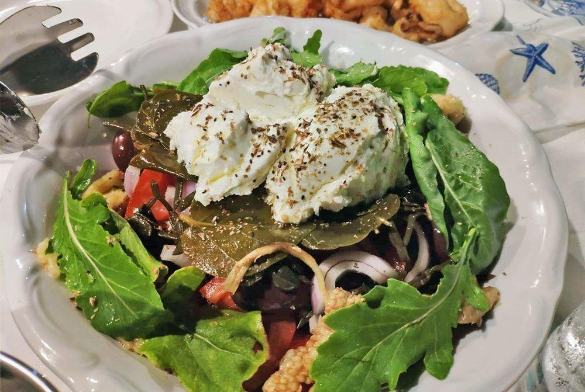
Drosos Vlamos · From Kalymnos With Love
Mermizeli and mouri
Mermizeli is a barley-rusk salad with tomato, capers and soft cheese. Mouri is a whole lamb stuffed with rice, a feast dish. Cooking classes run at a boutique apartment hotel in Myrties.
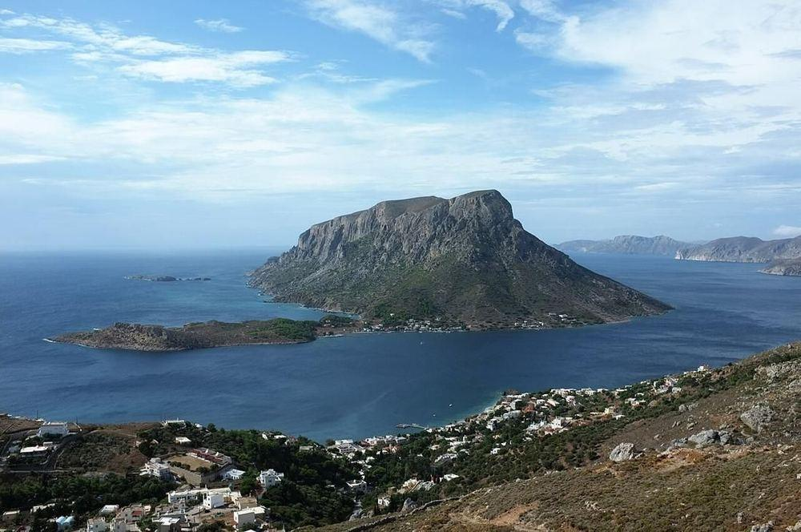
Wikimedia Commons
Massouri and Myrties beaches
The beach and hotel coast, facing the islet of Telendos across a narrow strait, a 30-minute drive from the food center at Pothia.
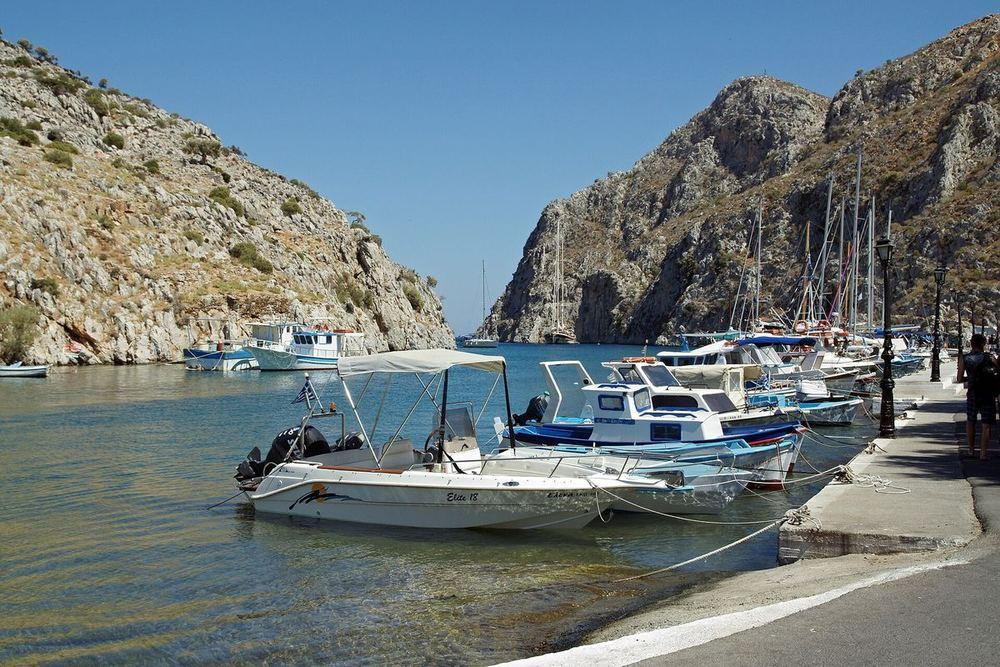
kallerna · Wikimedia Commons
Vathy fjord
A narrow inlet on the east coast that opens into a green valley of citrus groves, with a tiny harbor and a couple of tavernas at the head of it. The one place on the island that is unexpectedly lush.
Boats you can drive yourselves
The best of the three for getting out on the water yourselves. Rent A Boat Kalymnos hires 5-meter 30-hp boats with a sun canopy and ice box, no license needed, up to seven people, fuel extra, with a skipper available for a small extra fee. Pickup points and day rates are arranged by phone. Nothing is published online. Telendos and the islet of Pserimos are the natural runs; Kalymnos Boat Trips does a private skippered full day to Pserimos, Lipsi and Arki.
With the kids
The two-euro boat to Telendos runs every half hour until late and takes ten minutes, and there is nothing on the far side but one lane of tavernas, a beach and no cars, so the older two can go over and come back by themselves. Climbers are on the cliffs above Massouri all day and you can watch them from the beach. The day out on a small boat with an adult driving is the thing the ten-year-olds will talk about afterwards.
A base for the whole group
The widest and cheapest choice of the three, and the usual shape is an apartment or studio with a kitchen. Pothia puts you in the town with no beach. Massouri and Myrties, on the west coast facing Telendos, put you on the beach with no town. There are small apartment hotels along that coast that could plausibly hold the whole party at one address, Worth checking first.
Stop 3 · the last week · 5–6 nights · one of two
The third stop
Five or six nights of not moving, somewhere that takes the whole group, with a pool, the sea, food and boats going out from nearby. Two islands can do it and they do it very differently. Two shapes have worked for this group before. One big house: everyone under one roof, cooking and drinks our own, cheapest per family, and it only works if everybody commits to the same week. Family suites side by side: half board, meaning breakfast and dinner are included, or dinner credits, so nobody plans meals, a club for the kids, and families can come for three nights or six.
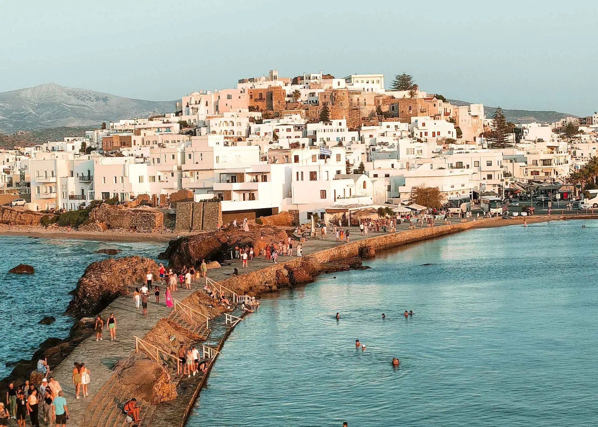
Travel photography
Naxos
The island town
The best sand in the Cyclades and a real town right behind it, so the swimming and the walking out for dinner are the same week and nobody gets driven anywhere. It is the busiest island on this page, and in early July you feel it.
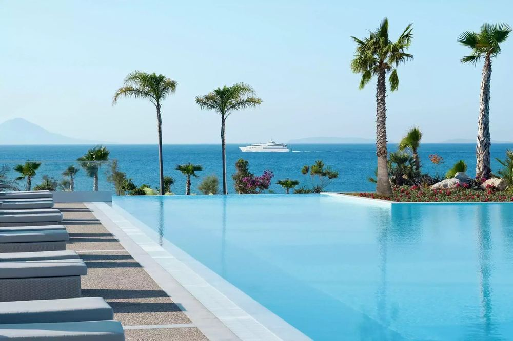
Ikos Resorts
Kos
The resort
Flat, long and green, with its own airport and one resort built for a group this size: pools, a private beach, a club for the kids, meals handled. The trade is that a resort could be almost anywhere. The Greek part of the week starts when you walk out of it, and the village is ten minutes away.
Stop 3 · option 1 of 2
Naxos
A town with the best sand in the Cyclades in front of it
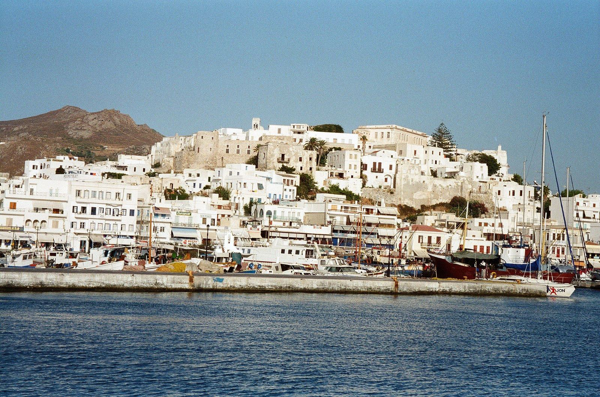
Herbert wie · Wikimedia Commons
Stop 3 · option 1 of 2
Naxos
A town with the best sand in the Cyclades in front of it
Who it fits. A resort is the easy answer for the last week and there is nothing wrong with one, except that you could be almost anywhere while you are inside it. Naxos is the version where the last week is still Greece: four kilometers of soft shallow sand, and a town behind it you walk into for dinner. It also has the widest choice of places to stay on this page, villas included. The trade-off is the crowd. Getting there: a direct boat from Syros most days in summer, about an hour and a quarter, or from Milos four times a week. From Athens it is a short nonstop flight.
The trade-off. You get the beach and a real town in the same place, so the swimming and the evening do not need a car between them, and you get the widest choice of villas on this page. You give up quiet: this is the busiest island here, and in early July you feel it.
What Tassos says
Where to stayA villa, and he expects one big enough for all twelve to be easy to find here. He did not name a village; the beaches below are where the sand is. Five or six nights.
Where to goBeaches first: Plaka, Agios Prokopios and Mikri Vigla, all long sand and shallow water. Then the food, because Naxos is farming country, so the local cheese, the potatoes and the meat. Then the Portara at sunset, a single giant marble doorway left standing on the headland from a temple that was never finished, plus the old town and the mountain villages, Halki and Apeiranthos. You need cars to reach them.
The largest island in the Cyclades and the most agriculturally serious island on this page, with long shallow sandy beaches, mountain villages, Venetian towers, and food producers you can visit.
About 33 km end to end. Beaches down the west coast; the villages and Mount Zas inland. Outlines: OpenStreetMap contributors.
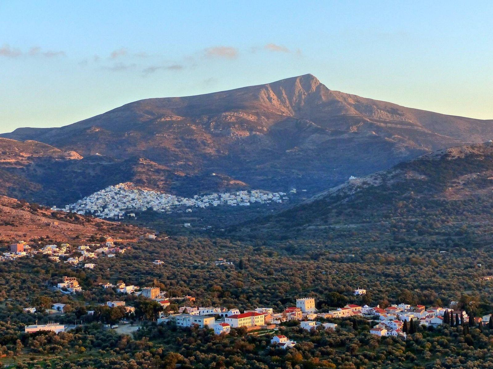
Kategiam · Wikimedia CommonsThe Tragaia valley and Halki under Mount Zas, the interior most visitors never see.
Travel photography
The causeway, and why Naxos works
The strip of rock that runs out to the Portara, with the old town behind it and shallow water on both sides. Families swim off it in the late afternoon and walk back into town for dinner. This one picture is most of the argument for Naxos: the beach and the town are the same place.
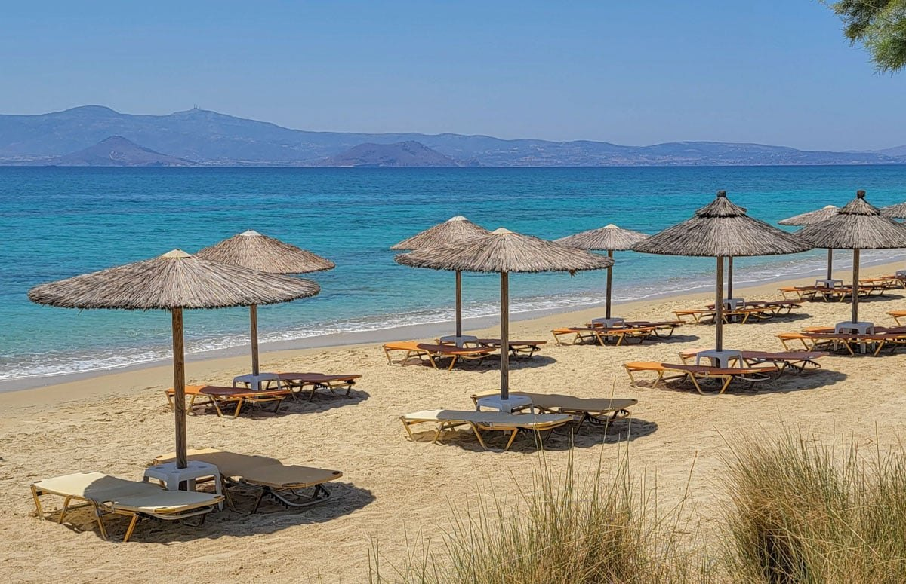
Travel photography
Plaka beach
The first beach Tassos named, and the third Plaka on this page: on Naxos it is four kilometers of sand. Four kilometers of soft sand on the west coast, shallow a long way out, with organized stretches and empty stretches side by side. Agios Prokopios is the busier neighbor to the north and Mikri Vigla, where the kitesurfers go, is south.
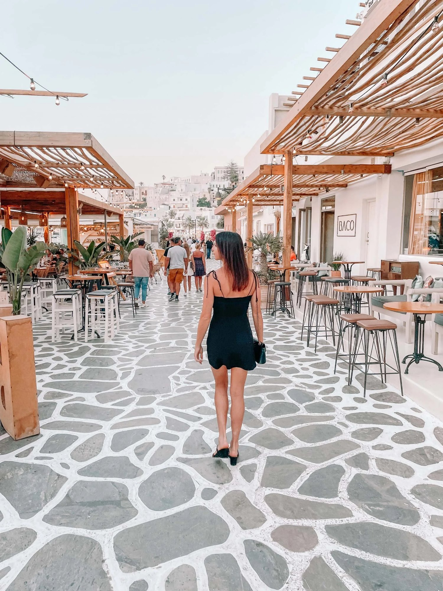
Travel photography
The town in the evening
Naxos Chora, which is simply what a Greek island calls its main town, after the beach: marble paving, pergolas, tables out, and enough people about that the older kids can go out after dinner on their own. This is the thing a resort does not have. Naxos is a town that happens to have the beach.
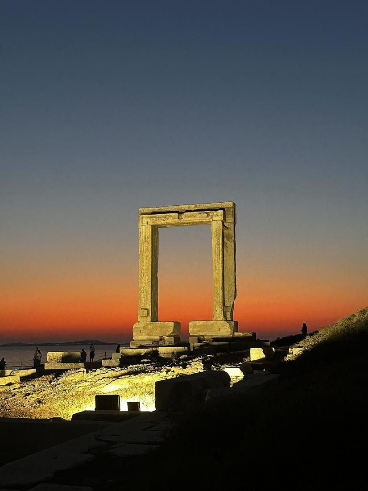
Vasilismorfo · Wikimedia Commons
Portara
The giant marble doorway of an unfinished ancient temple, standing alone on an islet at the harbor mouth. The classic Naxos sunset spot.
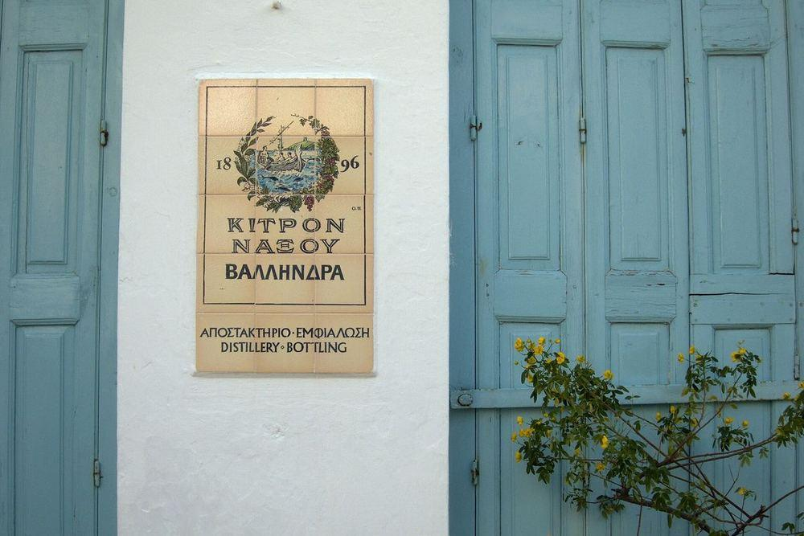
Zde · Wikimedia Commons
C messier · Wikimedia Commons
Kitron and cheese: Vallindras distillery, Halki
Still makes Kitron, a liqueur from a citrus tree that only grows on Naxos, the old way, and gives tours. Naxos has four EU-protected foods, including its cheeses (graviera and the sharper arseniko, pictured) and its potatoes, and the island's tavernas lean on all of them. Two wineries give tastings too: Terra Grazia, beside a 13th-century Venetian tower, and the century-old St Anna.
Holger Uwe Schmitt · Wikimedia Commons
Apeiranthos, the marble village
A mountain village paved entirely in marble, with arches over the lanes, small museums and craft workshops. Cooler than the coast by several degrees.
Wikimedia Commons
Mountain villages and the Kouroi
Halki, Filoti and Apeiranthos in the interior, plus the Kouroi: giant unfinished marble statues abandoned in ancient quarries where they were carved.
A fast boat to the Rina cave
A local operator on the west-coast beaches runs private half- and full-day trips with a skipper on a rigid inflatable boat, the fast kind with a rubber hull (up to nine guests) to the Rina sea cave and the Koufonisia, two small islands an hour east, with a lunch stop at a Koufonissi taverna. Small boats you can drive without a license turn up on the charter sites, but there is no single operator here with a published day rate, the way there is on Kalymnos. The Cyclades catch more of the meltemi, the strong north wind that blows across the Aegean in summer, than the Dodecanese do, that being the island group along the Turkish coast where Kalymnos and Kos sit, so small-boat days are less reliable here. Late June is milder than August.
With the kids
The Kouroi: giant unfinished statues, each one the size of a bus, lying where they were abandoned in the quarry. The old marble doorway on the headland at sunset. A day out on a fast inflatable boat to the sea cave at Rina. And the beach sits a quarter of a mile from the middle of town, so the swimming needs no car and nobody has to be driven anywhere.
A base for the whole group
The widest choice on the page by a distance. Hotels and villas run down the west coast around Agios Prokopios and Plaka, and a villa with a pool that sleeps a large group is an ordinary product here. This is the one island where getting everybody to one address is not the thing to worry about.
Stop 3 · option 2 of 2
Kos
The resort island, done properly
Greek National Tourism Organization
Stop 3 · option 2 of 2
Kos
The resort island, done properly
Who it fits. For the whole group under one roof and nothing to organize: Ikos Aria at Kefalos puts pools, an organized sandy beach, kids' and teen clubs, a spa and a dozen restaurants at one address, ten minutes' walk from a real village. The trade-off: more package tourism than the small islands, the north coast catches the summer north wind, and Kefalos is 40 minutes from Kos town. Getting there: the boat from Kalymnos, thirty to forty-five minutes, about eighteen a week, landing seven kilometers from the airport. Home is a flight to Athens from that same airport.
The trade-off. You get one address that handles everything: pools, a beach, a club for the kids, meals, and nobody organizing anything for five days. You give up the sense of being on a Greek island while you are inside it. Kefalos village is ten minutes away on foot, and that is where you get it back.
Long, narrow and flat, with a busy resort coast in the north and a quieter, whitewashed end at Kefalos in the south. For a last week it does the job well: a real airport with several Athens flights a day, sandy organized beaches, two water parks, and the one resort on this list built for families at scale. The history is here too: Hippocrates was born on Kos, and the Asklepieion, the ancient healing sanctuary where he taught, is a short ride from town.
About 42 km end to end. Kos town and the airport in the northeast; Kefalos and Ikos Aria at the far southwest end, about 40 minutes by car. Outlines: OpenStreetMap contributors.
kallerna · Wikimedia CommonsKos town: the marina, the palms, and the castle wall built by the Knights of St John, the crusading order that held Kos and Rhodes until the Ottomans took them.
Wikimedia Commons
Kastri, off Kefalos
The little chapel island at the south end of Kefalos bay, a few hundred meters offshore and close enough to swim to on a calm day. It is the photograph everyone takes on Kos, and it is one small corner of a long green island.
Travel photography
The island you can cycle
Kos is flat, and it is the only island here where that is the point. There are marked bike lanes through the town and out along the coast, bikes for hire everywhere, and the terrain is gentle enough that a ten-year-old can ride it. On Syros, Milos or Kalymnos the same ride is a climb.
Travel photography
The sanctuary where Hippocrates taught
The Asklepieion is a healing sanctuary on three terraces climbing a hillside four kilometers out of town, looking across the strait to Turkey. Kos has more standing ancient stone than the rest of the shortlist put together, most of it free to walk into and much of it in the middle of the modern town.
Travel photography
Tingaki, and the long flat beaches
The north coast is one long shallow sandy shelf, organized end to end, with Kalymnos on the horizon. This is the resort-beach version of a Greek island, and it is the reason Kos sits at the end of the trip: after two weeks of moving, this is where nobody has to do anything.
Ikos Resorts
Ikos Aria, Kefalos
An all-inclusive resort on Kamari bay at the quiet end of the island: 370 rooms and suites across a main building, bungalow suites and a private-pool Deluxe wing, family suites, seven heated pools including a kids' splash pool, a private sandy beach, a spa, four tennis courts, a kids' club for ages four to twelve and a supervised program for teenagers. Its Dine Out program covers meals at partner tavernas in Kefalos village, a ten-minute walk away, so the group is not locked inside the gates.
Michal Osmenda from Brussels, Belgium · Wikimedia Commons
Fish tavernas and island cheese
Mastichari's fish tavernas (O'Makis, Kali Kardia) are the ones people drive across the island for, and Kos town's harbor has its own. Local products worth asking for: posa, the sheep-and-goat cheese aged in red-wine lees, and thyme honey from Antimachia and Kefalos.
Karelj · Wikimedia Commons
Zia at sunset
A hill village 350 meters up Mount Dikeos with the island's sunset view across to Bodrum on the Turkish coast. Touristy in the early evening, and still worth it. Two family wineries in the same foothills give tastings: Hatziemmanouil at Asfendiou, and Ktima Akrani (the Triantafyllopoulos estate) at Miniera, Monday to Saturday.
With the kids
The castle at the harbor mouth, two water parks, the Roman theater, and boats from the harbor to the little island of Pserimos. The resort at Kefalos runs a club for four to twelve year olds and a separate program for teenagers. The harbor front in Kos town is closed to cars in the evening.
A base for the whole group
Ikos Aria at Kefalos (above) is the one that makes the case for Kos. If it does not work out, the same shape exists elsewhere on the island: two or three large beach resorts at Tigaki and near Mastichari with family suites and children's pools, some of them half board, meaning breakfast and dinner included; and private villas near Kos town and at Kefalos big enough for the whole party.
Ввласенко · Wikimedia Commons
Boats out of Mandraki harbor
Kos Rent a Boat at Mandraki harbor hires no-license 30-horsepower boats in six-hour blocks (fuel extra), a licensed boat that reaches Pserimos, Kalymnos and Nisyros, and a skippered speedboat; private skippered day tours for up to nine run from half a day to a full day, with rates published on the operators' sites. Pserimos and Plati are the classic runs, Kalymnos the ambitious one.
Side by side
Compare
Stop 2 candidates side by side, in the same words as above. Nothing here is ranked.
An island town with the beach in front of it; the one that does not need a resort
The main town, called the Chora, as it is on every Greek island: castle quarter, market, waterfront, and the widest choice of places to stay of anywhere on this list
The old marble doorway, the Venetian castle quarter, the giant unfinished statues lying in their quarries, Apeiranthos and the mountain villages
Long shallow sand all down the west coast; windsurfing at Mikri Vigla; boat trips to the Koufonisia and the other small islands east
Second only to Syros: a real high street, and a beach a quarter of a mile from the middle
Direct boat from Syros most days, about 1h15, or Milos 4 a week; short flight from Athens
Sixty-odd things worth ordering, from the plates that arrive first to the ones only one island makes. Tap a picture to see where it came from. The Greek table works best for twelve if you order a lot of starters and salads for everyone and fewer mains.
The table
What arrives first, and what the whole group shares.
Horiatiki
The village salad: tomato, cucumber, onion, olives and a slab of feta. No lettuce.
Tzatziki
Thick yogurt with cucumber and garlic. Goes with everything on the grill.
Taramosalata
Fish-roe spread, pink and salty, eaten with bread.
Melitzanosalata
Smoky mashed eggplant with oil and lemon.
Fava
Yellow split peas cooked to a puree, with raw onion and capers on top.
Dolmadakia
Vine leaves rolled around rice and herbs, served cool with lemon.
Saganaki
A slab of cheese fried until it browns. Order one for the table.
Feta with honey and sesame
Feta wrapped in phyllo, fried, and covered in honey and sesame.
Spanakopita and tiropita
Spinach and feta between sheets of crisp phyllo. Tiropita is the same with cheese only.
Dakos
A barley rusk softened with grated tomato and topped with soft cheese.
Kolokythokeftedes
Zucchini fritters with feta and herbs. The kids' starter.
Gigantes
Giant white beans baked slowly in tomato.
Horta
Boiled greens with lemon and olive oil. On every table, and better than it sounds.
Keftedakia
Small fried meatballs with herbs, made for sharing.
Koulouri
The sesame bread ring sold on every Athens corner. Breakfast on the walk.
Grill and oven
Souvlaki
Pork on a skewer, grilled, with pita and lemon. Everyday food, not tourist food.
Gyros
Pork shaved off the spit into a pita with tomato, onion, tzatziki and fries inside.
Bifteki
A grilled beef patty, sometimes with cheese in the middle.
Paidakia
Lamb chops grilled hard over charcoal. You eat them with your hands.
Moussaka
Eggplant, spiced ground meat and a thick layer of bechamel, baked.
Pastitsio
The baked pasta: tube pasta, spiced meat and bechamel on top.
Kleftiko
Lamb baked slowly in a parcel with potatoes and lemon until it falls apart.
Gemista
Tomatoes and peppers stuffed with rice and herbs and baked.
Imam baildi
Eggplant baked soft with a lot of onion, tomato and olive oil.
Stifado
Beef stewed with whole small onions in a spiced tomato sauce.
Youvetsi
Meat baked with orzo in a clay dish until the pasta soaks up the sauce.
From the sea
Grilled octopus
Charred over the grill and dressed with oil and vinegar. The island plate.
Fried calamari
Squid rings, lightly fried, with lemon. Order for the whole table.
Whole grilled fish
Sea bream or sea bass, grilled whole, priced by the kilo. Pick it from the ice.
Marides and gavros
Tiny fish fried whole and crisp. You eat the whole thing.
Grilled sardines
Grilled, with onion and lemon. Cheap and the best thing on the menu in summer.
Shrimp saganaki
Shrimp in tomato sauce with feta melting into it. Bread goes in after.
Kakavia
The fishermen's soup: several kinds of fish with potato, onion and lemon.
Sweets and the afternoon
Loukoumades
Small fried dough puffs, hot, drowned in honey with cinnamon.
Baklava
Layers of phyllo and nuts in syrup.
Galaktoboureko
Semolina custard baked between phyllo and soaked in syrup.
Bougatsa
The breakfast custard pie, dusted with icing sugar and cinnamon.
Portokalopita
Orange cake made with shredded phyllo, very moist, served in squares.
Yogurt with honey and walnuts
Greek yogurt with honey and walnuts. Breakfast or dessert.
Kaimaki ice cream
Chewy ice cream made with mastic, often with sour cherry on top.
Amygdalota
Soft almond sweets, an island specialty, sometimes with rosewater.
Freddo espresso
Iced espresso shaken to a foam. What every Greek under 40 is drinking.
Watermelon and feta
Watermelon with feta and mint. The summer salad.
Drinks
Ouzo
Anise spirit. Add water and it turns cloudy. Sipped slowly with small plates.
Assyrtiko
The island white: dry, sharp, mineral. Grown on Santorini.
The islands’ own
Made on one island, or on the group of islands around it.
Syros
Syros loukoumi
The soft jellied sweet the island is known for, flavored with rose or mastic and dusted in sugar.
Syros
Halvadopita
Nougat with almonds pressed between two thin wafers. The other Syros sweet.
Syros
San Michali cheese
The island's hard, sharp cow's-milk cheese, protected by name.
Cyclades
Louza
Air-dried pork loin sliced thin, the Cyclades' own cured meat.
Cyclades
Revithada
Chickpeas baked overnight in a sealed clay pot with onion and olive oil.
Milos
Pitarakia
Small fried cheese pies, the thing you snack on all week.
Milos
Sfela cheese
The island's salty white cheese, in slabs.
Kalymnos
Mermizeli
Barley rusk with tomato, caper leaves and a sharp soft cheese. The Kalymnos salad.
Kalymnos
Mouri
A whole lamb stuffed with rice and liver, sealed in a clay pot and cooked in a wood oven.
Kalymnos
Filla
The Kalymnos stuffed vine leaves, folded into small pentagons, with meat and rice.
Kalymnos
Spinialos
Sea squirts marinated in seawater, the sponge divers' plate. The dare.
Kalymnos
Thyme honey
From hives on the rocky hills. Buy it from a producer's yard, not a shop.
Naxos
Graviera and arseniko Naxou
Graviera is the mild cow's-milk cheese; arseniko is the sharper sheep-and-goat one. Both protected by name.
Naxos
Naxos potatoes
The island's potatoes have their own EU protection. Order them plain, fried or roasted.
Naxos
Kalogeros
Veal and eggplant baked under a cap of melted graviera. The dish most tied to the island.
Naxos
Rosto
Pork cooked slowly in red wine and tomato, with the island potatoes.
Naxos
Melachrino
Walnut cake soaked in kitron syrup, served with kaimaki.
Naxos
Kitron
The liqueur made from the leaves of the citron tree, which only grows here. Vallindras in Halki still makes it.
Kos
Posa cheese
The Kos cheese, aged in the lees left from making red wine.
Credits
Photos and maps
Most of the place photos are from Wikimedia Commons under open licenses and are credited below. Twenty-eight of those, and nearly all of the food photos, are not: stock, travel-site and recipe-site pictures, plus a few press and business images. They are here so the four families can see the places properly, on a page that is unlisted and marked no-index. If any of this ever goes further than the group, those twenty-eight come out or get bought. One photograph, the salad at Papaioannou, is Josh’s own. Island outlines from OpenStreetMap contributors.
Photo credits
Added 23 and 24 September 2026, not openly licensed. Source noted; used privately for the trip party only.
The food section, added 24 September 2026: photos from the recipe and food sites linked on each tile, not openly licensed, used privately for the trip party only.
food/horiatiki: Horiatiki — Josh, at Papaioannou Vouliagmeni
food/tzatziki: Tzatziki — Once Upon a Chef
food/taramosalata: Taramosalata — The Greek Foodie
food/melitzanosalata: Melitzanosalata — The Mediterranean Dish
food/fava: Fava — Gimme Some Oven
food/dolmadakia: Dolmadakia — My Greek Dish
food/saganaki: Saganaki — The Mediterranean Dish
food/feta_honey: Feta with honey and sesame — The Mediterranean Dish
food/spanakopita: Spanakopita and tiropita — Wikimedia Commons
food/dakos: Dakos — My Greek Dish
food/kolokythokeftedes: Kolokythokeftedes — The Mediterranean Dish
food/gigantes: Gigantes — The Mediterranean Dish
food/horta: Horta — Herbs & Flour
food/keftedakia: Keftedakia — The Mediterranean Dish
food/koulouri: Koulouri — My Greek Dish
food/souvlaki: Souvlaki — The Mediterranean Dish
food/gyros: Gyros — The Greek Foodie
food/bifteki: Bifteki — The Hungry Bites
food/paidakia: Paidakia — The Greek Foodie
food/moussaka: Moussaka — The Mediterranean Dish
food/pastitsio: Pastitsio — The Mediterranean Dish
food/kleftiko: Kleftiko — The Mediterranean Dish
food/gemista: Gemista — The Mediterranean Dish
food/imam: Imam baildi — Cooking Gorgeous
food/stifado: Stifado — The Mediterranean Dish
food/youvetsi: Youvetsi — The Mediterranean Dish
food/octopus: Grilled octopus — Diane Kochilas
food/calamari: Fried calamari — My Greek Dish
food/whole_fish: Whole grilled fish — Elsa Silva / Pexels
food/marides: Marides and gavros — Real Greek Recipes
{kind=link}
{kind=link}
{kind=link}
{kind=link}
{kind=link}
{kind=link}
.jpg){kind=link}
{kind=link}
{kind=link}
{kind=link}
{kind=link}
{kind=link}
{kind=link}
{kind=link}
{kind=link}
.jpg){kind=link}
{kind=link}
{kind=link}
{kind=link}
{kind=link}
{kind=link}
{kind=link}
{kind=link}
{kind=link}
{kind=link}
{kind=link}
{kind=link}
{kind=link}
{kind=link}
{kind=link}
{kind=link}
{kind=link}
{kind=link}